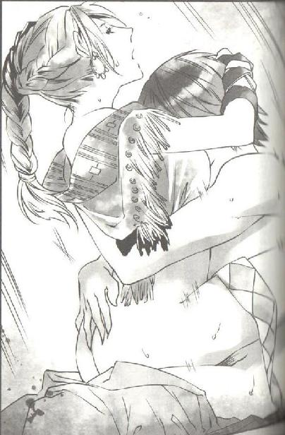

第32集·大宋特工
临安篇（1/10）
出版日期：2012-03-15
【本集内容简介】
以商人为职，立志做遍六朝生意的程宗扬，狠狠地在战场上捞了一把，继而带着员外郎的举荐任命来到宋国临安城。
一入临安，历史上知名的大奸臣几乎齐聚一堂！秦桧、贾似道、夏夜眼、高俅……
这还不算什么，《水浒传》的名角也相继出现！瞧那李师师居然不是名妓而是医官？林冲鬼鬼祟祟地当起了特务搞跟踪……
程宗扬会被卷入更为复杂的计谋纠葛吗？
※ ※ ※ ※ ※
封面人物：李师师
插图：李师师

插图：相雅
正月二十一，晨。
江州城外。金明寨。
中军大帐内一片死寂。夏用和白发萧索，那双赖以成名的夜眼虽然仍像鹰隼般的锐利，目光中却多了一分阴冷。秦翰双目低垂，神情间看不出半分喜怒。
秦翰战功赫赫，此役虽然是前来助战，但夏用和未曾以寻常客将看待，两人分左右而坐，不过最上方的主位此时却空着。昨日一战，前来督战的翁应龙被八牛弩射中，至今生死未卜。
另一名大貂珰李宪按着宫里的规矩，叉手立在秦翰身后。李宪虽然是内侍出身，但文武双全，也是心高气傲之辈，不过在秦翰身边，他始终是一名新晋的后辈。
对于秦翰的位置，李宪没有半分妒意。夏用和策划多日的决战却以宋军大溃告终，若不是秦帅的选锋营力挽狂澜，在乱军之中护住中军大纛不失，局面只怕已经无法收拾。
下方站立着宋军的高级将领。捧日、龙卫二军一共有四个厢，四十个军都指挥使，然而此时，留在帐中的只有半数。
江州之战打到今日，谁也没有想到三川口一战首先遇挫的捧日左厢军，如今却成了兵力最完整的一支。第一军都指挥使曹琮、第二军都指挥使折继闵、第三军王信、第四军王仲宝……包括刚刚接任第十军都指挥使的种世衡均在列，实际兵力超过六个军。
四名厢都指挥使中仅存的捧日军右厢都指挥使石元孙低着头，手掌不停抹着斗篷，掌心的冷汗似乎怎么都擦不干净。今日的决战，他的捧日右厢军损失最为惨重，星月湖大营接连攻破他四个军，一战下来，损失几乎与经历过定川寨惨败的龙卫右厢军相当。
四厢中伤亡最惨重的莫过于参加过好水川之战的龙卫左厢军，主将任福连同七名军都指挥使战死，另一名军都指挥使范全又在定川寨一战中被杀，幸存下来的只有朱观、王达两名军都指挥使，加上新任命的刘宜孙也不过三人。
会议已经进行了半个时辰，却没有一个人发言。刘宜孙几次想开口，都被后面的张亢拉住。
良久，夏用和微微欠了欠身，“秦帅？”
秦翰点了点头，“好。”
夏用和也点了点头，然后道：“散了吧。”
帐中的将领如梦初醒，参差不齐地向几位主官跪地施礼，然后铁甲铿锵地离开中军大帐。
刘宜孙一头雾水，出了大帐才低声问道：“怎么回事？”
张亢冷冷道：“要退军了。夏帅请秦帅断后，秦帅也答应了。”
明白过来的刘宜孙无言以对。仗打到现在，粮草已尽、士气全无，除了退军没有第二条路可走。只希望秦帅的选锋营能牵制住江州贼寇，免得在撤退中再次遇袭溃败。
“王指挥！折指挥！种虞侯！”
张亢熟络地打着招呼，叫住几名将领。几人似乎随意地聊着天，十分默契地避开撤军的话题，口气虽然称不上轻松，但也没有剑拔弩张的紧张。
刘宜孙默默看着，发现张亢叫住的将领有捧日左厢军的王信、折继闵、种世衡、郭逵，龙卫右厢军的赵珣，但没有一个来自捧日右厢军石元孙麾下的将领。
众将交谈片刻，也没有说什么便各自散去。但张亢已经达到自己想要的目的，每个肯停下来寒暄的将领，都将是自己在江州之战中最可靠的友军。
“这一仗打完，捧日、龙卫两军的将领恐怕要全换一遍。”回去的路上，经过金明寨被焚烧过的辎重营时，张亢这样说道。
短短两个月内，遭遇过战败、父丧、被囚、执掌一军这一连串的经历，刘宜孙成熟了许多，已经没有初来时担当先锋的锐气。他沉默多时，然后道：“若不是这一战，谁能想到禁军最精锐的上四军，会落到如此地步。”
“有功不赏，有过不罚。只要能在几位主官面前混个脸熟，就能受到提拔。”张亢道：“这仗能打到今天，已经称得上是将士用命了。”
刘宜孙默默无言。出师之前，他一直认为捧日军兵强甲精，是天下有数的强军，直到在江州城下，他才见识到什么才是真正的不败雄师，意识到上四军与真正的精兵差距有多大。
张亢道：“眼下三位厢都指挥使出缺，削尖脑袋找门路的也不知有多少。”
刘宜孙忽然生出一个荒唐的想法，“你不会想让我当厢都指挥使吧？”
张亢哑然失笑，“怎么可能？三个厢都指挥使的位子，卖掉两个，还得留一个为国装点门面。我看不是王信，就是周美。”
“为何不是曹琮？”
“曹琮家世显赫，又有战功，一个厢都指挥使是跑不掉的。不过他未必肯留在禁军仰人鼻息。”张亢拍了拍衣服，“如果能活着回去，我也不准备再留在禁军。”
刘宜孙一惊，“你要弃军从文？”
“好不容易转成军职，为什么要放弃？”张亢道：“筠州恐怕要设军，我想要这个都监的位子，你来帮我。”
“怎么帮？”
“给我一个都。”张亢毫不掩饰地说道：“我过烈山去抢些财物。”
“你！你……”纵然相交多时，刘宜孙仍被他赤裸裸的口吻惊呆了，怔了半晌才放缓口气，“你是进士出身，当都监的资格已经够了。”
“够资格有什么用？没有钱哪里能当上？”张亢的面容在营地零星的灯火下忽明忽暗，“兵部、枢密院、太尉府，处处都要打点。”
“那你为什么要过烈山？不是过江吗？”
“过江抢晋国的？”张亢冷笑道：“去投北府兵的罗网吗？”
刘宜孙彻底惊呆了，“你要抢宋国的百姓……”
“那我就是丧心病狂之徒。”良久，张亢吐出两个字：“昭南。”
一股寒风拔地而起，吹起身上的衣袍，两人久久没有说话。
※ ※ ※ ※ ※
江州城西的客栈中一片旖旎春色。淡淡曦光映在红绫帐上，帐内传来柔婉的歌声：“自作新词韵最娇，小红低唱我吹箫。曲终行尽松陵路，回首烟波十四桥……”
充满韵味的诗句如歌如画，静心去听，仿佛乘在一条摇荡的小舟上，伴着优雅的箫声穿过一座座烟柳画桥，如梦似幻。
帐内的一幕远比优雅的歌声来得香艳。唱歌的美妇赤裸着白滑的胴体，仰身卧在锦榻上，如黛的青丝散开，娇艳的玉颜带着醉人的红晕，雪肤花貌，令人心旌摇曳。一名如鲜花般的少女伏在她身上，两女雪乳相接，玉股交叠，白美的娇躯纠缠在一起，两张娇美的面孔相隔不过寸许。美妇的丰秾熟艳与少女的娇柔香嫩相映成辉，妍姿艳致，流露出无边春色。
两张玉脸之间挺立着一根怒胀的阳具。充血的龟头如鹅蛋般又红又胀，棒身血管怒张，仿佛虬屈的蚯蚓。两女玉颜相映，粉颊轻摩，梦娘娇声吟唱，雁儿则张开樱唇，用香舌柔顺地舔舐着阳具。那根火热的阳具在歌声中微微震颤着，似乎随时都可能爆发。
小紫斜身坐在程宗扬绷紧的腹肌上，手肘支在程宗扬胸口，一手托着香腮。她身上披着一条紫色缎子，裸露出雪滑的香肩和晶莹的玉足。她用足尖轻轻挑弄着梦娘的玉体，笑道：“阿梦是才女呢……还有吗？”
梦娘想了一会儿，有些不好意思地摇了摇头，“不记得了……”
小紫在梦娘的玉颊上捏了一把，笑道：“不记得就罢了。好了阿梦，诗也吟过了，我们换个姿势吧。”
程宗扬张着腿，大模大样地半靠在榻上，背后很舒服地垫着几个枕头，虽然这会儿身边群芳环绕，他的脸色却不是一般的难看。
“死丫头，”程宗扬字字血泪地说道：“天都亮了！你该玩够了吧？”
“没有啊。”小紫笑道：“谁教你站不起来的。”
“干！我把你十八处穴道都封了，看你还能不能站起来！”
小紫竖起食指，认真地摇了摇，“站不起来就是输了，不许耍赖哦。”
程宗扬正要开骂，忽然眼前一亮。雁儿和梦娘从自己腿间爬起来，展露出两具迷人的玉体。
小紫从紫缎下伸出一只雪白的小手，勾了勾手指，让两女靠近一些，笑吟吟道：“雁儿在左边，阿梦在右边——程头儿，好不好看？”
两女并膝跪坐在程宗扬身侧，扬起手臂，双手抱在脑后，螓首微微后倾，挺胸收腹，显露出玉体柔美的曲线。两具白美的胴体如脂如玉，两对雪乳高耸着，散发出诱人的光泽。
程宗扬头不能动，只有眼睛左右乱转，在两女身上滚来滚去。雁儿的乳房小巧而紧凑，像玉石一样光洁，乳头像小小的花蕾，又柔又嫩。梦娘的双乳丰挺白硕，仿佛两颗丰满的大白桃，红晰的乳头精致如球，略一触弄，淡红的乳晕便迅速变得鲜红。
两女俯下身子，各自捧着雪乳，将滑腻而充满弹性的乳肉放在主人身上轻轻揉摩。程宗扬呼吸越来越粗，忽然身体一挺，阳具跳动着像要喷射出来。
接着看到一只如明玉般的纤手柔柔伸来。小紫屈指在他的龟头上轻轻一弹，那根怒胀的大肉棒仿佛被打中七寸的蟒蛇，一瞬间蔫了下去。
程宗扬喘着气道：“我投降！”
“这才第七次，还有两次就好了。”
“我发誓！再有一次，我这辈子都硬不起来了！真的！”
小紫在他唇上亲了一口，眨着眼睛道：“人家帮你吹起来哦。”
程宗扬痛心疾首地说道：“我要再信你，出门就让我撞猪！”
小紫笑着把梦娘往程宗扬身上一推。那具温香软玉的胴体撞到怀中，程宗扬的表情立刻凝固在脸上。梦娘的肉体丰腴而滑腻，一肌一肤无不媚艳生姿，香滑的肌肤、美妙的触感，使程宗扬刚软化的阳具一下子充血怒勃起来。
梦娘垂下玉颈，温柔地将主人的阳具纳入口中，细致地吞吐起来。
“哦——”程宗扬大叫着在梦娘的口中爆发出来。
憋了一整夜的精液又稠又浓，滚热地射进梦娘的喉内。梦娘被浓精呛住，不由地咳嗽起来，涂着胭脂的红唇溢出一缕浓浊的白浆。
这种连续多次忍精不发，然后一次喷射的快感比单纯的射精强烈数倍，程宗扬只觉得从发梢直到脚底，无处不沉浸在射精的快感中，仿佛有无数令人战栗的电流闪过。
满足之余，程宗扬还有些失望。本来以为小紫会给自己一个惊喜，结果死丫头还是妙口难开。好不容易才开恩，让自己抱着她温存了一会儿。
“早点办完事，到临安来找我。”
“人家不去临安。”
“嫁鸡随鸡，嫁狗随狗，想跑没门！”程宗扬咬牙切齿地警告道：“还有，不许和死老头走得太近。告诉你！男人吃起醋来，很吓人的！”
小紫皱了皱鼻子，“大笨瓜！”
程宗扬嘱咐道：“有事找武二，那么壮的劳力不用白不用，他欠我的钱还没还呢。”
“知道啦。”小紫伏在他胸口，用鼻尖在他的颈中蹭着，然后露出一个绝美的笑容，娇声道：“等你回来，人家让你开苞哦。”
“拉倒吧！我要再信你，我就是猪！”
※ ※ ※ ※ ※
离开时，程宗扬没有惊动太多人，前来送行的只有孟非卿、萧遥逸和秋少君。
看到秋小子，程宗扬不由吓了一跳。一夜不见，这小子的下巴上竟然多了一丛半尺长的胡须，风一吹飘飘荡荡。如果不是两眼一边一个青眼窝，看起来颇有点仙风道骨的高人模样。
秋少君抖了抖胡子，一脸沾沾自喜地说道：“怎么样？还不错吧？”
程宗扬像看猴子一样看着他，半晌才道：“秋小子，老实跟哥说，是不是谁凌辱你了？”
秋少君头摇得像拨浪鼓似的，“没有没有！哈哈，那个姓武的暴徒其实是个胆小鬼！我们刚比了半场，听说我要跟他决斗，就躲得没影了。哈哈哈哈！”
程宗扬心里嘀咕：武二那是犯不着跟你玩命吧？
“这胡子是怎么回事？你下巴长头发了？”
“月姑娘说我整天跟在她后面，能不能成熟一点？我想了一晚上，于是用头发做成胡子。你瞧，”秋少君说着一手捋着胡须，口气深沉地说道：“这样是不是很成熟？”
程宗扬板着脸扭过头，“萧刺史，麻烦你找个大夫，给秋道长治治病！”
萧遥逸道：“秋道长的病包在我身上！程哥，快去快回！我下半辈子就指望你了。”
秋少君抗议道：“谁说我有病？”
孟非卿一把按住秋少君的肩膀，对程宗扬道：“一路顺风！放心，江州丢不了！”
铁栅打开，小船驰出水门，沿江逆流北上。
远远能看到江畔血战后遗留的战场。夏用和机关算尽，布下天罗地网，如果不是殇侯适逢其会，赶上搅局，星月湖大营这一仗即使能成功溃围，也必定伤亡惨重。结果夏用和筹划多时的决战以宋军失利而告终，局势顿时逆转，陷入绝境的成了宋军。
金明寨的粮草本来就不多，又被斯明信和卢景联手放了把火，能救出三成已经不错了。程宗扬敢肯定，现在所有的宋军都在饿肚子。从三川口到江州城下，宋军屡战屡败，士气已经降到谷底，在后方粮草供应上来之前，无力再战。
但宋军即使败上一百次，只要想打照样还能打下去；星月湖大营只要败上一次，就将彻底出局。这是一场从开始就不公平的较量，是一场狼群与雄狮的搏杀。狮子虽然威猛，豺狼的数量却无穷无尽。好在自己布下的绞索，已经套在宋国的脖颈中。
对宋军而言，小狐狸的求和绝对是雪中送炭。程宗扬相信，夏用和再精明也看不出其中的玄虚，因为这无关战术，已经不再是战争层面的较量。现在要看的是贾师宪究竟肯下多大的本钱。
没有小紫在身边，程宗扬总觉得少了点什么。看看旁边，别说美女了，整条船里除了生锈的船锚，就数敖润长得俊俏，剩下三个货一头比一头狰狞，直看得程宗扬怒从心头起，恶向胆边生。早知道应该把卓贱人要来同行，真不行，惊理和罂粟女那两个贱人也可以啊！
船过城北，程宗扬忽然发现月霜的身影。她倚着白马，独自立在灌木丛中，目光冷冷地望着自己的小船。
小船从岸旁驰过，程宗扬露出一个大大的笑容，用力朝月霜招了招手。月霜表情愈发冰冷，眼中像要凝成冰一样。程宗扬吐了吐舌头，然后两手的拇指、食指相扣，放在眼睛上，比了一个戴墨镜的手势。不出所料，月丫头用力啐了一口，接着翻身跃上马背，头也不回地驰回江州。
程宗扬双手叉腰，得意地“哈哈”笑了两声，但终于无聊地闭上嘴，感到心底生出一丝寂寞……
忽然，江畔的芦苇荡传来一声轻响，接着方圆十余丈的芦苇仿佛被狂风尽数卷起，干枯的苇叶在刹那间漫天飞舞，带来一片萧杀的气氛。
谢幼度双足微分，立在一丛斩断的芦苇杆上。他双手横在身前，握着一柄连鞘的长剑，俊美的脸上闪过一丝红晕。
在他对面立着一名黑衣老者。那老者面容干瘦，脖颈和手背生着如鱼鳞般的鳞甲，双眼凹陷极深，眼球仿佛没有眼睑一样干枯而黯淡。
剑鞘青黑色的鲨皮染上一点灰色，在谢幼度真气的催发下渐渐消失。他朗声道：“鱼长老自泊陵千里迢迢来我江州，有何见教？”
那位鱼长老声音低哑，“我们鱼家的小无夷被人杀了。那娃娃学艺不精，死了也没什么好说的，但他身上有件东西听说到了江州。没奈何，老儿只好专程跑一趟。”
谢幼度神情微动，“无夷公子？鱼长老既然怀疑是江州人做的手脚，何不光明正大前去质问？在这里伏袭一个小辈，传出去未免有失身份。”
鱼长老翻了翻眼球，“小子，老儿吃的盐比你吃的饭都多，当老儿是三岁的娃娃？殇老鬼到了江州，老儿这点用毒的本事用不着赶去献丑。那丫头既然是混蛋鹏的闺女，老儿用什么手段，也没人会说失了身份。”
程宗扬与敖润面面相觑，过了会儿敖润道：“他好像在说岳帅？”
程宗扬点点头，“这名字我觉得比武穆王还拉风。混蛋鹏——老敖，你说岳帅他老人家的德行不至于欠到这地步吧？”
敖润却道：“我得赶紧去知会月姑娘一声！程头儿，你们先走，老敖去去就回！”
“省省吧！有谢公子在，用得着你向副队长献殷勤？”程宗扬一边说，心里一边嘀咕：这鱼长老不会是来找阴阳鱼的吧？
谢幼度执剑道：“幼度受人所托，守护月姑娘周全。请鱼长老指教。”
“皇图天策府，好大的名头。老儿惹不起还躲不起？”鱼长老冷笑一声，后退半步，没入水中，随即消失得无影无踪。
谢幼度跃上小舟，第一句话便道：“送你的鲈鱼吃完了吗？”
“吃完了。”程宗扬咂了咂嘴，“味道还不错。”
谢幼度笑了笑，“程兄欲远行？”
程宗扬也不瞒他，“临安。”
“临安啊，西湖美景六月天……”谢幼度悠然神往，过了会儿才满是遗憾地说道：“可惜我是去不成了。”
“谢将军既然来了，为何不到城里一叙？”
谢幼度露出几分为难的表情，问道：“小侯爷在吗？”
“当然在，上次还说你到江州竟然不来看他，哈哈。”
谢幼度叹了口气，“既然小侯爷在，那就改日吧。”
“不会吧？难道你们两个有仇？”
“没有。只不过程兄知道——幼度这个时候与小侯爷见面不大合适。”
“私人身份也不行？”
“公私岂能分明？落到有心人眼里，免不了大作文章。”谢幼度洒然一笑，然后郑重施礼道：“艺哥的刀，我已派人去建康取了，多谢程兄。”
“喂！”程宗扬叫道：“你们谢家不打算为艺哥报仇了吗？”
谢幼度背影微微一震。
“五原城！”
片刻后，谢幼度长揖一礼，然后飘然而去。
敖润凑过来，“程头儿，害死龙骥谢艺的人在五原城？”
程宗扬摸了摸下巴，“不好说。不过我在五原城有两个仇家，现在顾不上收拾他们，让谢家先给他们找点事做。”
“程头儿，你这是借刀杀人啊！”
“是吗？”程宗扬一脸无辜地说道：“佛祖说的，这都是缘啊。”
敖润只能啧啧两声，无语叹服。
程宗扬回头看着自己的跟班，“羊肉都吃饱了，还愣着干嘛？赶紧划船！今天我们要向北走一百里水路，绕过宋军。要是误了路程，月底每人扣一只羊！”
金兀术不满地说道：“主人！你太苛刻了！”
“你再废话，每人扣两只！”
豹子头和青面兽立刻一起捂住金兀术的嘴巴。
发完火，程宗扬一阵颓丧。死丫头不在，自己冲几个半人半兽的家伙发什么脾气呢？
敖润吆喝一声，三名兽蛮人一起用力。小船向上一跃，船底贴着水面，箭矢般逆水而上。
※ ※ ※ ※ ※
“金兀术！豹子头！还有你青面兽！吃饱了有劲儿是不是？划这么快干嘛！本来订好的行程，全被你们打乱了！”
“主人！”金兀术拧着脖子争辩道：“是你让我们赶快划的。”
程宗扬大叫道：“扣羊！”
两个字镇住三个家伙。程宗扬嘟囔道：“什么世道！我发句牢骚都不行？”
按照原订计划，众人向北划一天的船，远远避开宋军游骑的侦测范围，然后在江畔歇宿一夜，次日向东越过烈山，赶往筠州。
谁知三名兽蛮人蛮力一发，不到半日就行完了一天的水路。程宗扬一看时间还早，便放弃在江边宿营，进山赶往下一个宿营点。结果少了半日时间，天色将暗，众人还在山里打转，眼看今晚第二个宿营地无论如何也赶不到了。
敖润安慰道：“没事！这条路老敖走过，迷不了路！大不了找个草窝子睡一夜，明天接着赶路。一天走不了两天的路程，两天走三天的路总能赶得出来。”
程宗扬也知道自己心急了，他揉了揉脸，然后道：“找个有水的地方，把带的帐篷拿出来，今天不走了。”
敖润野营的经验果然丰富，没多久便找到一条山涧。解决了水源问题，众人扎好帐篷，敖润又拿铁弓射了一头獐子，剥洗干净，架在火上烧烤。
和三名兽蛮人相处一天下来，程宗扬发现他们虽然粗鲁凶恶，但都属于嘴一张就能看到屁眼儿的直肠子，倒是比和人打交道更轻松一些。而且三名兽蛮人受过选锋营的训练，复杂的任务执行不了，基本的令行禁止都能做到，指挥起来算得上得心应手。
队伍里多了三个大号饭桶，一条獐子还不够大家塞牙缝的。三名兽蛮人聚在一起，商量着再找些猎物。
青面兽说：“牛肉。好肥！”
金兀术说：“无牛。吾见兔子。”
豹子头说：“兔子有刺。卡嗓子。会死。”
三名兽蛮人一起慎重地点头。程宗扬一阵恶寒，这三头吃货一口能塞一只兔子，卡死他们都活该！
敖润道：“老术！老豹！老兽！别商量了。夜里山路不好走，路险得很！这山涧上面是条山路，每年都栽下来几个……”
话音未落，就听到头顶一阵嘶鸣声，一匹马失蹄滑下山崖，后面还拖着一辆马车，车上的驭手惨叫着连人带马一起栽进涧内的树丛。
程宗扬、敖润和金兀术一起掠了过去。程宗扬去看马车，敖润去找那名不知摔到哪儿的驭手，金兀术则如猛虎般扑上去，先一口把跌伤哀鸣的马匹咬死，然后拧下马头，血沫横飞地叫道：“肉！”
三个人里，青面兽还算斯文一些，摇着头说：“马肉粗。”
豹子头蹿过去，伸手扯下条马腿，一口先咬到马蹄子，“咯咯”地嚼着，“马肉好硬！”
程宗扬没理会那三头大牲口，他侧肩撞开车厢，用力拉开变形的车门。
一张雪白的面孔映入眼帘，如玉的容颜使程宗扬心跳似乎停了一下。车厢内是一个美貌少女，她梳着鬟髻，髻上的钗子嵌着一颗龙眼大的明珠，身上穿着一袭洁白的丝衣，一只秀美的耳朵上挂着一根丝绦，眼睛因为受惊睁得大大的，五官娇美精致，唇角有一颗小小的红痣，使那张娇美的面孔平添了一股风流的韵致。
程宗扬露出和蔼的嘴脸，温言道：“小娘子，可曾受了伤？”
可惜他这一番温情款款全被后面的金兀术等人破坏了。那三个家伙围着死马开怀大嚼，说话时，豹子头正好从马腹里掏出马肠，像吃粉条一样“哧溜哧溜”往嘴里吸。车内的小美人儿又是惊骇又是恶心，一副几乎要呕吐出来的表情。
程宗扬咳了一声，“那是我养的几条獒犬，看着凶恶，其实不伤人。在下姓程，是过路的商人，不知道小娘子芳名？”
那少女虽然连人带车从山崖跌下，身上却没有受伤。最初的惊惶过后，很快镇定下来，敛衣道：“奴家姓李，李师师。”
※ ※ ※ ※ ※
“李师师”三个字一出，程宗扬的耳边就好像听到老虎机“哗啦”一声，吐出无数硬币。
中大奖了啊！这还是自己头一回遇到青史留名的名妓。据说钱塘名妓苏小小喜爱春日乘油壁香车出游，原来李师师也有这样的雅好。不过冬天大半夜乘马车在穷山恶水里瞎转悠……这种爱好实在是太特别了。
看到程宗扬古怪的表情，李师师讶然道：“公子认得奴家吗？”
“听说过……”程宗扬看着她的面庞，仿佛坠入那种现实与历史、真实与梦幻交织的感觉中。完全是下意识的，他听到自己用暧昧的声音问道：“多少钱一夜？”
李师师茫然睁大眼睛，似乎没有听懂。
这样娇弱的神情，果然是名妓风流……程宗扬挤挤眼睛，“我是说，跟你过夜的话，要几个金铢？”
“啪！”
一个耳光结结实实地印在程宗扬脸上。
程宗扬顿时清醒过来。真是色迷心窍啊！亏自己还是个新鲜出炉的高手，连这个小娘儿们的一记耳光都没躲开。
“喂，你这个小娘子！凭什么乱打人？”程宗扬义正辞严地说道：“我是说这荒郊野岭的，你这样摔下来，肯定走不成了。我们要保护你，也不能白干对吧？你怎么也得给几个钱是不是？”
李师师冰雪聪明，哪里听不出来他是找台阶下？没有理会程宗扬的解释，她撑着车厢起来，忽然脚下一软，吃痛地跌了回去。
打过这么多架，程宗扬对跌打损伤多少有些了解，一看就明白了几分，“别动，你扭了脚踝，我帮你看看。”
“不用。”
李师师挽起裤筒，然后看了他一眼，先拉过车帷遮住双腿，这才除下鞋袜。她活动了一下脚踝，然后打开厢内一口金属匣子，取出药物、绷带，熟练地包扎起来。
程宗扬瞪大眼睛看着李师师。她身上的白衣式样简洁，没有一点多余的饰带，而她耳朵上挂的丝绦竟然是一只摘掉半边的口罩！老虎机之神在上！李师师不当名妓，改行当护士了吗？
正胡思乱想间，敖润拖着那个驭手过来，他脸色奇差，老远就向程宗扬打手势。
“老敖，搞什么——干！”
程宗扬仔细一看，只见那名驭手穿着黑色的皮甲，头戴红缨毡帽，赫然是一名宋兵！
敖润挑了挑眉毛，然后比了个手势，意思是杀了车内的人灭口。
程宗扬脸色数变。自己费力绕了这么大个圈子，就是想避开宋军，结果阴差阳错撞了个正着。如果换作别人，自己也许真就下手灭口了，可车内是李师师啊！
李师师飞快地包扎好脚踝，然后抬起螓首，神情凛然地说道：“奴家是大宋明州虎翼军随军医官，师从光明观堂，忝居外堂弟子。今日奉军令赶赴江州，随行有虎翼军一个指挥的骑兵。方才马惊坠崖，得阁下援手，奴家在此谢过。”
这丫头不简单，先亮出虎翼军和光明观堂的名号，表明身份，然后又郑重道谢，给足了自己面子。即使荒山中遇到的这几个陌生人真有什么不轨之心，被她这番话一说，多半也会打消念头。
程宗扬笑道：“原来是光明观堂弟子，那就不是外人了。小可程宗扬，与鹤羽剑姬、乐明珠、穆嫣琪、邓晶几位仙子都认识的。”
李师师一怔。光明观堂有内堂、外堂之分，内堂传衣钵，外堂传医术，这陌生人说的几个都是内堂弟子。鹤羽剑姬潘师姐名头响亮，他听说过并不奇怪，乐明珠、穆嫣琪、邓晶几个，外界少有人知，他竟然也知道。
“年前小可在晴州正逢几位仙子设立慈幼院，小可解囊相助，才与几位仙子相识。”
李师师容色稍霁。原来是晴州来的商人，难怪会在山中夜宿，又如此锱铢必较。
山崖上传来一阵呼喊声，李师师放下心来，扬声道：“我在崖下！”然后向程宗扬一笑，“程商人，多谢了。他日有闲，奴家与穆师姐、邓师姐一起登门道谢。”
眼前的李师师年纪尚小，已经有意无意间显露出一番风流韵致，真不知她再长几岁，会是何等风流婉转？可惜头顶足足有一个营的宋军，程宗扬再有什么别样的心思，也只能含笑拱手，说一声：“保重，有缘再会。”
宋军垂下绳索，将医官和摔死的同伴接上去。看到山中有人，几名攀绳下来的宋军都露出戒备的眼神。尤其是那几名兽蛮人更引起对方的警觉。
好在有慈幼院的一番交情在，李师师没有难为他，说了马惊坠车，得程商人援手的经过，双方就此告辞。
等这一营宋军走远，程宗扬吐了口气，“明州的虎翼军。太好了！贾师宪这是铁了心要打下去！你们几个吃完马肉都把嘴擦干净！有没有一点形象啊？两天之内赶不到筠州，每人扣一只羊！”
“刻薄的主人……”
“闭嘴！”青面兽和豹子头一起按住金兀术，喝道：“你不想吃羊了！”
※ ※ ※ ※ ※
望着船来船往、热闹非凡的浮凌江，程宗扬哑口无言。这是赶庙会吗？自己以为死奸臣他们偷运粮食都是趁夜偷偷摸摸来去，谁想到声势会这么浩大，公然在宋国人眼皮底下玩花样。
秦桧神采飞扬地说道：“这些都是运木料的船只。筠州常平仓被一场大火烧成白地，如今百废俱兴，全靠我程氏商行登高一呼，招募民夫从下游砍伐树木，送来木料。前两日筠州官府专门送来一块光荣匾，上书‘急公好义’，如今就挂在粮铺的大门上。”
“行啊奸臣兄，再干些日子，官府都该给你立牌坊了。”程宗扬道：“回来的时候是木料，去的时候都不是空船吧？三十万石粮食，你们真是好本事。”
秦桧道：“荆溪县衙只能存粮二十万石，另外的十万石，我们在城中另租了场地存放。往荆溪去的船只出入都由粮铺统一安排，倒也不是十分麻烦。”
“王团练那边有动作吗？”
“暂时还没有。”秦桧道：“常平仓失火，粮价飞涨，筠州的官员都在四处催粮，供应军需。王团练公务缠身，恐怕一时顾不上我们。”
“他不动手最好，干完这一票，我们立刻走人。一个团练用不着我们大费心思。”程宗扬道：“慈音那边呢？”
“来过两次。”秦桧道：“第二次来时，我见她气色很不好，似乎和谁动过手，还吃了点亏。”
程宗扬不知道静善与慈音之间的底细，一想到城中还隐藏有高手，心头不禁微微一震，“这几天是要紧时候，不能让她坏了事，让长伯盯住她！”
“不成了。”秦桧苦笑道：“前日我们的人等了一夜不见师太出来，冒险潜进去，才发现观音堂已经人去楼空。她们师徒不知何时不告而别，连庙里的僧人也不知晓。”
这下麻烦了，自己还答应殇侯要带他见慈音，结果上钩的鱼偏偏长出翅膀飞了，老头知道还不气死。
秦桧看出他的神情，“有何不妥？”
“算了，先不管她。”
死尼姑那么贪财，怎么会轻易跑掉？自己不去找她，她也会找上门来。程宗扬把这事放到一边，又问道：“沐羽城联络了吗？”
“依公子吩咐，属下从沐羽城请来五百名昭南人，如今已经到了荆溪，只不过……”秦桧苦笑道：“他们只肯与公子打交道。”
程宗扬皱了皱眉。五百人的队伍，昭南人真下本钱。在他的计划里，昭南人只是一个道具，如果再跟他们扯皮，只怕耽误时间。
“粮价呢？”
“接到公子的吩咐，我们已经出了八万石的货，目前和谈的消息还没传来，粮价仍维持在一千铜铢以上。”秦桧笑道：“有滕知州的赏识，各家对我们程氏粮行十分信得过。宏升行和日昌行各买了三万石，都是交钱订货，粮食仍存在我们程氏粮行，省了来回搬运。”
程宗扬笑道：“看来空手套白狼的生意还有得做。既然粮食大都还在，索性三十万石粮食全卖给滕知州。”
秦桧低咳一声，“属下倒有个主意。”
听着死奸臣小声说出计策，程宗扬的眼睛越瞪越大，“死奸臣！这种主意都想得出来？太黑了！”
秦桧谦虚地说道：“近朱者赤。属下追随公子多日，多少学了一些法门，不足以别开生面，不过拾遗补缺而已。属下以为，一丝一粟，当思来之不易，一火焚之，未免可惜。”
“奸臣兄，你不当官真是可惜了。这么卑鄙的事都让你说得冠冕堂皇。”
秦桧谦虚地说道：“近朱者赤。属下追随公子多日，多少也学了一……”
“停！这不是我教你的！黑锅少往我身上扣了。”
秦桧哈哈一笑。
程宗扬思索半晌，“不要让人起疑才好。常平仓不到一个月便两次失火，恐怕会引起有心人的怀疑。”
“属下想办法做得巧妙一些，终不能让人疑心到我们程氏身上。”秦桧道：“公子，要不要去粮铺看看？”
“不用。有老四在，我放心。咱们去荆溪县衙。”
船近荆溪，远远能看到数十艘船只由舟手操纵着，在岸侧排列整齐，百余名民夫正在林中砍伐树木。这里距离荆溪县衙，水路只要绕个弯就到，走陆路却隔着大片大片的密林。从上游来的船只都在岸旁停下，卸下民夫工匠，然后由粮行的人接手，绕到后面卸载压舱的粮食，再一一驶出。因此岸上民夫虽然多，却无人知道相隔不远，有一处比筠州官府还要富足的大粮仓。
程宗扬没在伐木的岸旁停留，直接到了荆溪县衙的码头。祁远是大管家，坐镇城中粮铺，吴三桂则去打探消息，留在这里的易彪、林清浦、冯源闻讯赶来，众人见面又是一番欣喜。
“彪子，吴大刀来江州了！”程宗扬大声说道：“忙完这边的事，你就回江州，干你的老本行！”
“走南荒？”
“当你的大头兵！”
易彪怔了一下，然后怪叫着向后一个空翻。只有这时候才看出他其实还是个年轻人，不像他哥哥那样沉稳。
敖润笑道：“彪子！往后就是咱们三个搭伙了！”
易彪喜形于色，“成！”
冯源叫道：“我呢？”
敖润道：“程头儿，咱们直属营的法师太弱了，能不能换一个啊？”
“哇呀呀！好你的敖大块儿！看我的火法！”
几个人笑闹着乱成一团，程宗扬向林清浦拱手道：“林先生。”
林清浦双手合拢，长揖一礼，“程公子。”
“这些日子多辛苦你了。”
林清浦道：“职责所在。”
程宗扬一听，知道这趟墙角是挖不成了。不过林清浦如此忠心，更让自己起了招揽的心思。
林清浦道：“这几位是？”
金兀术、豹子头、青面兽见着生人，都警觉地闭上嘴，眼中凶光毕露，倒和一个人掉进狼群时全神戒备的神情差不多。
“我收的几个家丁，还看得过去吧？”程宗扬道：“忘了告诉你，武二如今也在江州。”
林清浦嗟叹道：“南荒一别，以为再难有相见之日，哪知数月之间又陆续汇聚到公子旗下。”不等程宗扬开口，林清浦便道：“公子，请。”
程宗扬只好苦笑着把招揽的话咽了回去。
整座县衙如今都堆满粮食，成堆的蒲包整齐码在一起，每隔几层还用木架隔开，留出空隙，便于通风。收来的粮食在粮铺和粥棚的仓库各留了一部分，并没有全部送到此地，但二十余万个蒲包的规模已经足够壮观。要知道，这可是上万吨的粮食，如果没有路上的耗费，尽数运到江州前线，足够宋军用几个月。仅靠浮凌江的水路，自己就能收来这么多粮食，可见宋国民间的富庶和官府浪费之大。
粮库有秦桧和祁远等人打理，程宗扬只看了一圈便与秦桧一同出来，带着三名兽蛮人赶往昭南人的营地。
不多时，秦桧遥遥一指，“就在这里了。”
眼前是一片空林，连个帐篷角都没看到。秦桧示意他往上看，程宗扬才发现头顶的树干上多了数十个大巢。那些昭南人用树皮和枝条编成巨大的巢状物，上面用树叶一搭就成了能够容身的宿处。枝条间隐约能看到箭头的寒光，显然他们几个的到来已经引起昭南人的注意。
程宗扬举起双手，表示自己没有恶意，并高声道：“在下程宗扬，请问是哪位沐羽城尊长带队？”
一个身影出现在树枝上，裘衣素带，却是沐羽城的主人申婉盈。
※ ※ ※ ※ ※
斑驳的月光从枝叶间穿过，如水一样浸润着少女晶莹的胴体。申婉盈赤条条地伏在一根半人粗的树枝上，光洁的肉体仿佛一团莹白软玉，在月光下起伏。生满树叶的枝条犹如绿色的双翼，从她的身下向外伸展开来。
树梢离地面足有五六丈高，朝下看去足以令人眩晕，程宗扬却体会到一种从未有过的刺激感。他背后是一个半人高的树洞，剖开不久的树干上还滴着浓绿的树汁，身前的少女像骑马一样骑在树枝上，身下垫着一块纯白的狐皮。她双腿低垂，浑圆的臀部向后耸起。程宗扬骑在她的臀上，火热的阳具硬梆梆地顶在少女的蜜穴中，做着男女间最亲密的接触。
随着阳具的挺动，柔腻的蜜穴有节律地收缩着，湿滑的蜜汁从花巢深处涌出，濡湿了身下的狐皮。少女白皙的胴体伴着苍翠的树枝在夜风中起伏，就仿佛在凭风飞翔。
“弟子……要泄身了……”
申婉盈呢哝着说道，一边挺起雪臀，将颤抖的花心迎向身后火热的龟头。
一股凉丝丝的气息从少女的子宫深处涌出，程宗扬深吸一口气，龟头顶住申婉盈的花心，使出卓云君亲传的房中术，将她乖徒儿泄出的阴精采补一空。
程宗扬从背后握住申婉盈的双乳，在她高潮的蜜穴中又开始新一轮的抽送。申婉盈连续两次高潮，阴精被程宗扬采补殆尽。最后，程宗扬亲自把精液射进她的体内，使她也完成了一次阴阳交融。
“弟子回到沐羽城便依照掌教真人的指点，勤加修习。”申婉盈道：“前日得到掌教召唤，弟子随即带领族人北上。”
云收雨散，申婉盈的眉眼间多了一抹娇艳，整个人像初绽的蓓蕾，愈发鲜美动人。虽然她师傅不是什么好鸟，但她完全是无辜的。卓贱人怕事情败露，不惜把爱徒拉下水，撺掇自己占了她的便宜，但程宗扬不打算让申婉盈吃亏。对卓贱人，自己只是单方面的采补，玩过算完；对申婉盈，他每次都是依照太乙真宗秘传的房中术，阴阳双修。申婉盈虽然失身于他，实际上得益甚多，因此对他愈发信赖。程宗扬甚至怀疑，哪天自己冒充的“掌教真人”身份被揭穿，她也未必会和自己翻脸。
申婉盈恭敬地说道：“有事弟子服其劳，掌教有事相召，婉盈及沐羽城族人唯掌教之命是从。”
“明天我要去见筠州的滕知州，到时你不用出面，只要派个人与我一道去就行了。”
“是。”
程宗扬又指点了她几句房中术，顺便把自己想要的几个妙处放进去，比如让她试试女上位，主动与自己交媾。申婉盈对他奉若神明，自然不疑有他。除了这些增添趣味的细节，其他口诀都毫无水分。毕竟自己的房中术是太乙真宗教御亲传，成色十足。
说话间，对岸的山谷突然腾起一片火光，虽然隔着二十余里，但在黑夜看来分外显眼。
程宗扬皱了皱眉头，自己的生意正在紧要关头，这两天无论如何也不能出什么差错。他迅速穿好衣物，飞身从树上掠下。
秦桧也看到火光，带着金兀术等人赶来，“那地方属下去过两次，是荆溪人的村寨！”
程宗扬心头一凛，立刻吩咐道：“让易彪、敖润看紧粮库！我们走！”
申婉盈道：“我也去！”
程宗扬一点头，带着她掠往江边。
沐羽城的昭南人乘独木舟而来，六人上了两条独木舟，越过浮凌江，朝对岸的着火点驶去。
山路虽然崎岖难行，但六人都是身手不俗。申婉盈犹如一只夜莺，轻盈地在枝叶穿梭，显示出她身为卓云君得意弟子的不凡修为；秦桧大袖飘飘，宛如在林中御风而行；金兀术、青面兽和豹子头四肢并用，身子一纵就是一两丈的距离，在树枝间跳跃前行，如同矫健的猛兽。
不到半个时辰，众人已经接近着火地点，能看到不远处的山谷中，一处村寨正在燃烧。六人悄然潜近，程宗扬额角的伤疤微微跳动，感受到一缕缕或浓或淡的死亡气息。
靠近村寨一角，入目的情形使申婉盈花容失色，几乎要惊叫失声。
荆溪人的村寨有近百户人家，大多是土楼，寨中到处是青翠欲滴的葡萄藤。一条碎石铺成的小径蜿蜒伸入绿荫深处，小径尽头是一片广场，中间竖着一根嵌着人形面具的图腾柱。青山秀水，宛如世外桃源。
广场上摆着一圈桌椅，上面菜肴杂陈，似乎正在举行欢宴。然而此时，广场内伏尸处处，地上数十具无头尸体，都是蛮人服饰的汉子。滴血的首级挂在图腾柱上，最上面一个赫然就是与自己做过生意的麻黩。他脸上还带着凝固的笑容，眼中却充满了震惊和意外，似乎是正在欢饮时遭到屠杀。
几名穿着号衣的军汉正举着火把大肆放火，土楼一座座燃烧起来，有些留在楼中的老人和孩子刚跑出门，就被那些军汉砍杀。
一名军汉头目坐在图腾柱下，一边喝着村寨酿的果酒，一边用尖刀挖下一个蛮人老者的眼珠，“你们这些蛮狗，粮食都藏在哪儿了？”
老者号呼着叫道：“天神在上！他会吞掉你们这些恶人！”
军汉头目一刀切断老者的喉咙，溅起的鲜血让对面一个家丁打扮的男子连忙闪避，“远着点儿！赵都头，沾上血怎么吃？”
姓赵的都头连声应是，然后道：“把房子都给我烧干净！给这些蛮狗一点厉害看看！”说着他又赔上笑脸，“王管家，这寨子穷得叮当响，翻遍也没几颗粮食，倒是寨里的蛮婆挺水灵。要不您赏脸，受用几个？也解解这一路的辛苦。”
王管家咳嗽一声，迈着步子走过去。
广场另外一侧，一群荆溪女子被长索捆成一串，哭号不已。几名相貌姣好的荆溪女子被拖出来，当众剥光衣物，被十余名军汉轮流奸淫。
看到王管家过来，一名军汉笑道：“王管家，这儿有个好的给你留着呢！”说着他从人群中扯出一个女子，捏着她的屁股道：“这个蛮婆怎么样？奶子大，屁股圆，一身皮肉又白又嫩！”
相雅满面泪痕，她从军汉手里挣开腿，不顾自己还被绳索捆着，拼命朝王管家踢去。
王管家侧身避开，淫笑道：“够烈性！就她了！”
两名军汉把相雅拖到广场中央，扯开她双手捆在图腾柱上，然后撕开她身上的白衣，露出她白皙的肉体。相雅的美目张得大大的，望着柱顶丈夫的头颅，眼中满是绝望和悔恨。
旁边一名军汉道：“这些蛮女真够味！比城里的婊子白嫩多了！”
“都头说了，蛮女留着也是祸害，干完一刀砍了，干净利落！”
“哪儿的话！”王管家道：“难得这些蛮女生得标致，留两个好的给大少爷冲喜，剩下的都卖到窑子里当婊子！”
“王管家高见！”
几名军汉七手八脚扯住她的双腿用力拉开，王管家摸着相雅的脸颊淫笑道：“这婊子就不错嘛。”
相雅木然的眼睛忽然闪了一下，接着血光乍现。相雅一口咬住王管家手指，她用尽全身力气，几乎能听到指骨在齿间的脆响。
王管家狂叫着拼命拔扯手指，旁边的军汉急忙去捏相雅的嘴巴。忽然那名军汉的脖颈中响了一下，接着一蓬鲜血溅开，切断的头颅横飞出去。
漫天血光中，相雅看到一抹雪亮的刀锋穿过血雨，在自己胸口寸许的位置猛然静止，接着刀锋翻起，将按着自己双腿的两名军汉左右砍翻。
赵都头飞身跃起，然后脖颈一软，脑袋突兀地歪到一边。
秦桧像刚写完一幅字般，从容抹着手指，从他的身后悠然踱步出来。
惨叫声几乎同时从四面传出。申婉盈手中的长剑不住颤抖，显然是第一次杀人，但她出剑时没有一丝犹豫，不一会儿，几名看守那些荆溪女俘的军汉都被她杀散。
程宗扬一脚踹中王管家的小腹，将他踢得两眼翻白，闭过气去，接着举刀砍倒一名对手，喝道：“不留活口！”
一股浓重的猛兽气息袭来，金兀术赤手抓住一名军汉的面门，往后一拗，以他手撕烈马的力量，直接把那人的脑袋拧了下来。豹子头张开血盆大口，尖长的獠牙将一名军汉的手臂刺穿，牙关一合，将他的臂骨咬成三截。
青面兽与他们两个全靠半兽人横蛮的力道毙敌不同，他抓起一杆长枪，枪缨一抖便挽起碗口大的一团枪花，展臂将一名军汉的肚腹刺得洞穿，竟然有一手不俗的枪法。
这队军汉不过三十余人，穿着号衣，戴着毡帽，属于宋军序列中最末一级的乡兵。六人四面合击，不多时便砍瓜切菜般的斩杀十余人，剩下的军汉心寒胆裂，跪下来拼命求饶。
申婉盈解开那些被缚的荆溪女子，她们一拥而上，哭骂着将那些宋军一一打死。程宗扬想留下一个活口，还被那些失控的女子咬了一记，眼睁睁看着那些女子发疯般将那名宋军砸成肉泥。
相雅跪在图腾柱下凄声哭号，幸存的族人也围拢过来，一时间哭声震天，连申婉盈的眼圈也不禁红了。
※ ※ ※ ※ ※
“一共三十七名宋军，无一漏网。”秦桧在寨中转了一圈，回来说道。然后他压低声音，“寨子里的男人都死了，这个寨子也完了。”
程宗扬已经见惯生死，但看到这惨烈的一幕仍不禁心头发紧。他咬了咬牙齿，忽然抓起旁边的一具尸首，狠狠抽了一记耳光。
王管家只是被踢晕过去，因此躲过一劫，没有被愤怒的荆溪女子撕碎。他被程宗扬一个耳光抽醒，看到场中的形势，立刻尖叫道：“饶命！饶命！”
程宗扬森然道：“你们是什么人？”
“我们是筠州的乡勇！是官兵！是官兵！”
“官你妈的兵！”程宗扬一个耳光抽掉他半边牙齿，“来干什么的！”
王管家满口流血，大着舌头道：“我们是来催粮的……是王团练的主意！”他狂叫道：“不关我的事啊！”
程宗扬咬牙道：“少啰嗦！快说！”
王管家一五一十地交待了自己的来历：他们都是王团练管辖的筠州乡兵，常平仓失火，州中紧急征集粮草，王团练除了逼迫州民，还派出乡兵四处劫掠。
“杀人抢粮？宋国官府还真有本事！”
“都是王团练！他为了赚钱，让我们来抢粮，好卖给官府！”王管家急于洗白自己，拼命说着，嘴角都溅出白沫，“王团练说，这些蛮族不服王化，杀了也就杀了……”
“王团练那个狗崽子还没死吗？”
王管家死命摇头，“大少爷的骨头断了几根，一直起不来。我家太太天天向老爷哭诉，要找那个姓程的商人算账……”
“砰”的一声，一块石头砸在王管家的脑袋上。王管家白眼一翻，顿时又晕过去。
相雅美目通红，几乎流出血来，她还要再打，程宗扬连忙拦住她。
相雅手中的石头“砰”地掉在地上，她美目淌下如血的泪珠，良久才叫了一声“程商人——”然后发出一声凄痛无比的悲鸣，令人肝肠寸断。
好不容易等相雅冷静一些，程宗扬才从她断断续续的泣诉中得知事情原委。
这支荆溪蛮族多年前受到县衙的压迫，举族迁到山中，少与外人接触，但程宗扬的出现改变了他们对外界的印象，尤其是秦桧按照程宗扬的吩咐，两次到村寨送来族人需要的各种货物，更打消了他们对外人的戒备。
因此这些乡兵傍晚时来到村寨，受到了荆溪人最诚挚的欢迎。他们拿出最好的食物、最美的果酒，招待这些远来的客人，没想到迎来了一群豺狼。
姓王的管家花言巧语打听了村寨的情形，得知所有人都聚在这里，于是起了歹心。在欢迎的宴席上，那些乡兵突然出手，这支荆溪人虽然不乏勇士，但猝不及防下，所有男丁来不及拿起武器就被乡兵杀死。荆溪女子白皙的皮肤和美丽的容貌更激起他们的兽欲，直接在荆溪人神圣的图腾柱下大肆奸淫。如果不是他们放火焚烧村寨，这支荆溪人可能无声无息间就被灭族，连凶手都找不到。
说起来，荆溪人遭此大难，还是因为自己的缘故。如果不是自己故意哄抬粮价，这些乡兵未必会来；如果不是自己给荆溪人送来货物，荆溪人也不会毫无防备；如果不是自己为避免节外生枝，一直容忍王团练，更不会有今日的惨剧。
程宗扬越想越是窝火，寒声道：“会之，我看姓王的是留不得了。”
“属下明白。”秦桧道：“我与长伯一起去。”
“不。”程宗扬一摆手，“神不知鬼不觉除掉他，太便宜这王八蛋！我要让他身败名裂，死得不能再死！”
“公子的意思是？”
程宗扬没有再说，而是对相雅道：“这里的事，有我一半的责任。你放心，我会给你们族人一个交代。”
相雅虽然没有完全听懂他们的交谈，但也明白他是要为自己的族人报仇。她拭去泪痕，白皙的面孔上露出荆溪女子的坚毅，“你已经救了我们全族女人的性命，我们要自己为死去的丈夫和父亲报仇。”
程宗扬道：“你们的仇人是筠州的团练，他手下有近千名乡兵。”
“如果我们不是相信了敌人的谎言，再多的敌人也攻不破我们的村寨。”
见程宗扬不相信她们有复仇的能力，相雅取下图腾柱上的一只号角，然后用力吹响。
苍凉的号角声传入深山，接着，一阵沉闷的兽鸣应和般远远响起。
大地微微震动，在程宗扬惊愕的目光下，一个庞大的影子出现在众人面前。
程宗扬曾见过阁罗乘坐的白象，但这头巨象比阁罗的白象体型更大，高度接近两丈，如同一座移动的城堡。它遍体披着灰褐色的长毛，象鼻粗长，巨大的象牙弯曲出极大的弧度，圆桌大的象蹄落在地上，整个地面仿佛被踏得凹陷。
程宗扬口里有些发干，如果自己没有认错，这应该不是大象，而是一头活生生的猛玛！干！自己拿到的竟然是猛玛牙，难怪比一般的象牙更巨大。
在自己的世界里，猛玛早在史前一万年就已经绝迹。程宗扬完全没想到这里的群山之间竟然还有长毛象的存在。他已经放弃弄清六朝这个世界究竟是什么时代，即使真的是史前一万年，程宗扬也不会有半点惊讶。
地面的震颤不断传来，一头又一头猛玛出现在焚烧过的村寨中。相雅把号角挂在胸前，抓住猛玛的长毛，敏捷地爬上猛玛的背上，然后吹了声号角。
猛玛如巨蟒般的长鼻伸出，以不逊于人手的灵巧卷住图腾柱旁的一根长矛，递到相雅手中。
相雅的白衣被军汉们扯碎，只有几块碎布贴在身上，露出大片大片的肌肤，但她对自己裸露的肌肤毫不在意。她跨在超过自己体型百倍的猛玛巨兽上，手握长矛，就像一个勇武的女战士。接着手臂向前一挥，长矛呼啸着刺中一棵大树，深度几达半尺。
荆溪女子纷纷攀上猛玛，跟随着相雅乘坐的头象，将长矛投在同一棵树上，展示出她们精湛的掷矛手法。然后相雅吹起号角，座下的猛玛迈步上前，足有一间房子那么大的头颅顶住树干，像折断一根牙签般，将大树顶断。
号角声中，所有的猛玛同时扬起巨鼻，犹如一片森林，接着巨口张开，发出沉闷而雄浑的吼叫声。那声音并不高亢，然而站在近处，空气中传来的压力仿佛要将耳膜压碎。
程宗扬这才明白她们哪里来的信心。用驯服的猛玛当作坐骑，简直是拥有了冷兵器时代无敌的移动堡垒。面对这样的巨兽，申婉盈固然花容失色，勇悍如金兀术、青面兽也都禁不住露出惧意。秦桧仍保持着神态自若的文士派头，但长袍微微鼓荡，显然也不那么轻松。假如这支猛玛战队投放到战场上，再多的战马恐怕也要拉稀。
“有了你们这支猛玛战队，我的把握更大了。”程宗扬提高声音，“如果你们还信得过我，给我一点时间！我一定会让你们报仇雪恨！”
相雅毫不犹豫地说道：“我们相信你！”
※ ※ ※ ※ ※
筠州，知州衙门。
滕甫拍案而起，“三十万石！”
程宗扬道：“这个数量大了点儿，我已经和昭南人说了，有十万石……”
“断断不可！”滕甫打断他，“三十万石便三十万石！”
程宗扬为难地说道：“可是昭南人开价甚高……”
“索价几何？”
“每石八百铜铢，加上运费，至少九百。”程宗扬苦笑道：“这个价格实在是太贵了。”
滕甫长叹道：“你可知道如今筠州粮价多少？每石一千四百铜铢！自从你走后，筠州粮价便连番飞涨，宏升粮铺与日昌行这些奸商，收购价压在一千铜铢，出售价却是水涨船高，一转手便是四百铜铢的利润！即便官府征购，还索要一千二百铜铢的高价。你这些粮食如果卖与那些粮商，每石至少是一百铜铢的利润，你却径直找到本官。”滕甫频频点头，“你很好，很好！”
程宗扬谦虚地说道：“在下正好路过昭南，听说昭南人有一批粮食要出手，想到州中缺粮才引他们来交易。大尹明鉴，每石九百铜铢，三十万石便是二十七万贯，合十三万五千金铢。这笔巨款……”
滕甫顿时怔住了。十三万五千金铢相当于筠州五年赋税的总合，而筠州最好的年景，结余也不足十分之一。也就是说，以筠州的财政收入，五十年也凑不出这笔巨款。
“不必担心！”滕甫断然道：“这笔款项由我来筹措。你先唤那些昭南人进来，这三十万石粮食正解我军燃眉之急！绝不容有失！”
程宗扬暗赞一声：不愧是当过朝廷大佬的，真是有担待！自己本来还准备了一大堆说辞，怂恿滕甫铤而走险，没想到他一口就答应下来。
程宗扬从衙中出来，向那名挑选好的昭南人知会了一声，让他进去与滕甫面谈。然后对秦桧道：“我们走！”
上了车，程宗扬才道：“你打听清楚了？”
“一共二百万银铢，昨日刚刚押解到筠州衙门。”秦桧道：“这笔款项是前线的军饷，本来年前就该发放。宋国财政捉襟见肘，一直拖延到现在才不知从哪里挤出这笔钱来，消息断不会有误。滕知州的意思是？”
“滕知州肯定要动这笔款项了。”程宗扬道：“私挪军费，这位滕大尹的胆量真不小。”
秦桧道：“宋国优待文臣，何况滕知州还做过御史中丞，为着朝中老臣的体面，总要包容一二。不过兹事体大，纵然不会杀头，也免不了下狱问罪。”
程宗扬琢磨了一会儿。这位滕知州实在不是个坏官，让他背这个黑锅也是迫不得已，但能帮他一把，最好帮一把。
“会之，给滕知州送封书信过去。”
程宗扬自己的书法实在不怎么样，死奸臣倒是一笔好字，一般的书信都由他来代笔。秦桧也不推让，拿出随身携带的笔墨，说道：“写什么？”
“给滕大尹算笔账。”
滕甫与昭南使者商晤多时，谈定三十万石粮食的交易才有时间打开书信，他一目十行地看过，立刻唤来家丁，“程公子呢？”
“一个时辰前已经与秦伴当离开了。老爷可是要叫程老板过来？”
滕甫重新读了一遍书信，摇了摇手，“不必了。拿札子来，今日之事我要立刻上奏。”
滕甫当日便写好札子，程宗扬递来的书信被他一字不改地抄入其中。
信中程宗扬确实算了笔账，但不是给他，而是为宋国算了笔账。滕甫之所以挪用军费购买粮食，只因前线已然断粮。与其运送二百万银铢的军费，不如换成粮食，以解前线燃眉之急。如果按照正常程序，与临安的案牍往来至少要一个月之久，文书送到早已时过境迁。况且不论是否挪用军费，单以成本计算，从筠州本地购粮肯定能节省大笔开支。
程宗扬在信中便是从成本入手。按照宋国一般的军粮转运，各地派遣民夫往筠州运送粮食，每运送一石粮到筠州，路上的耗费几乎在十倍以上。如今宋国各地均粮价腾贵，即使能买到六百铜铢一石的粮食，运到筠州的实际成本也远远超出一贯。现在筠州用九百铜铢的价格购买三十万石粮食，再没有其他支出，算下来成本只有各地调运的数分之一。
滕甫在札子中列出各地粮价，以及由官方组织民夫运到筠州的实际成本，包括途中耗费、征用民夫所误工时，一笔一笔分列清楚。事后滕甫因为挪用军饷被有司论罪，宋主也因为这封札子，特旨下诏不问。后来这封札子被收入《六朝名臣奏议》一书，被人评论为：以宰执之才行商贾之术，事不足道，仁心可嘉。
※ ※ ※ ※ ※
程宗扬的身份只是昭南与筠州方面的引见人，昭南的使者与滕知州见上面，就没自己什么事了。紧接着他去见了云氏在筠州的暗桩孙益轩，商量已定，才与秦桧一道赶往王团练位于城南的大宅。
程宗扬亲自登门，王家的下人照样爱理不理，足足等了一个时辰才出来一名管家，阴阳怪气地说道：“老爷不在。太太说了，程商人是自己来的，就不用拜见了。一名贱婢，在我们王家眼里如猪狗一样！却有人当了宝。一个不识时务的外乡人，小心后悔晚矣！”
程宗扬早知道有这一出，心平气和地听他骂完，然后递上一张折好的信笺，微笑道：“劳烦管家递给王团练，区区薄礼，不成敬意。”
管家不屑一顾地接过来，打开一看，胡须顿时抖了几下，然后飞快地跑进后宅。
程宗扬好整以暇地喝着白开水，不多时，那管家又奔出来，“老爷有请！”
王团练穿着一身绛紫色的祥云茧袍，他屈指弹了弹那张信笺，“五千石？”
“正是。”
王团练冷哼一声，“程公子好生豪富。”按现在的价格，五千石粮食合三千多金铢，无论如何也不算一笔小数目。
“冤家宜解不宜结，多个朋友多条路。”程宗扬一脸阿谀地赔笑道：“还请王团练笑纳。”
王团练对这个外路商人愈发鄙夷，冷哼一声收起信笺，心里暗道：敬酒不吃吃罚酒！让你倾家荡产滚出筠州，才见我的手段！
他不知道，对面的外乡商人也转着一模一样的心思：善恶到头终有报，让你身败名裂、满门尽灭，才见我的手段！
程宗扬本来不想和这个地头蛇多做纠缠，但荆溪村寨的惨剧让他下定了决心。一个小小的团练也敢盘踞筠州作恶多端，撞上我算你恶贯满盈，既为荆溪的朋友雪恨，也为筠州人除此一害。
※ ※ ※ ※ ※
次日一场大雪覆盖筠州。担心突降大雪酿成灾祸，天未亮，滕甫便出门察看雪情。
浮凌江畔的粥棚人头涌动，大批民夫聚在此处，都盼着大冷天能喝上一口热粥。粥棚如期开门，成包的粮食被倾倒出来，用石臼舂好。粥棚前，数十口大锅一字排开，待热水烧滚，舂好的粮食倾入其中，在沸水中滚动着，不多时便飘出粥香。
滕甫并没有像往日一样在粥棚前驻足良久，今天他的注意力更多地放在浮凌江上。
江面上铺满了筏子，每一条筏子都有一名昭南人在操篙而行，筠州急需的粮食就堆在筏子上，正源源不断地驶到江畔，岸上有数十名来自筠州衙门的官吏正在点验粮食。由于常平仓被焚，库房来不及重建，只能在常平仓清理过的废墟上搭起棚子堆放粮食。
那些官吏前后奔忙，指挥充作仓丁的乡兵搬运。由于粮食太多，从清晨到现在，众人都累得人仰马翻。
一名吏员抹着汗道：“这些昭南蛮子！连蒲包都不知道用，还得一船一船地称量。”
“哪里还用称量？”旁边的吏员悄声道：“一筏三百石，用三百条蒲包正好装完，我经手过了十余船，半点不错！”
“昭南人哪儿来的这么多粮食？三十万石，好家伙！上等的良田亩产也不过两三石，足足十几万亩的收成。”
“昭南的土地一年三熟，有粮食不奇怪。这几日前线催粮都催疯了，不光咱们筠州，周边州县的粮价都一个劲儿地猛涨。”
“浮凌江下游什么时候能通航了？这么多筏子，怎么过来的？”
忽然有人叫道：“来了！来了！”
一众官吏望着由远处丛林中走出的庞然巨兽，一个个都张大了嘴巴，一名书吏更是险些把笔杆拧断。
数十头庞大的长毛象出现在视野中，它们如粗蟒般的长鼻卷起拦路的大树，巨大的象蹄践开灌木，长而弯曲的巨牙扫开藤萝，从林中鱼贯而出。
它们的体型犹如一幢房屋，象头的高度足以令人眩晕。每头巨象硕大的颅顶上都坐着一个女子。她们的颈中挂着号角，肩后背着弓箭长矛，身上披着水牛皮制成的胸甲和膝甲，仿佛不惧严寒般暴露出大片大片的肌肤。
她们的眼神充满敌视和戒备。如果平时看到这样一支战象队伍，筠州人会立刻关闭城门、敲响铜钟，防备蛮族的攻击。然而此时，所有人的目光都被巨象背上的物品所吸引。那是一堆堆如小山般的粮食，每一头的负重都足有近百石之多。
几乎所有人心里都泛起一个念头：难怪昭南人能把粮食运过来……
在昭南人的引领下，巨象一头头走近临时的粮棚。接着女武士吹响号角，长毛巨象扬起长鼻，将粮食一包包卸下，由昭南人交割清楚。
官吏们愈发忙碌，都跑来清点象队运来的粮食。江边只留下四五名小吏，木筏不可避免地越聚越多。
忙碌间，忽然有人道：“咦？那不是王团练吗？”
王团练主管乡兵，常平仓的仓丁说起来都是他的手下。那些吏员虽然不是他的僚属，但和王团练早已熟稔，这会儿都迎上去与王团练寒暄。
不知双方说了些什么，能看到不少吏员都面露难色。接着王团练把手放到吏员袖中，再拿出来时，那些吏员都露出笑容。
滕甫没有注意到这个小小的插曲，甚至对巨象也没有多加留意，他的眼中只盯着那些粮食。常平仓被烧、前线断粮，他这个筠州最高长官压力不可谓不大。昨日敲定这三十万石粮食的交易，解了自己的燃眉之急。只是昭南人甚为固执，一口咬定要钱粮两迄。由于所需款项甚多，即使挪用军饷还有三万多金铢的亏空，他已经招集城中的商贾，希望他们能联名作保，先买下这批粮食。
膝甫巡视一圈，便赶往衙门。城中的商贾早已等候多时，对于官府摊派式的作保，商贾们都有些无精打彩。最后日昌行的周铭业提出，不如将余下的粮食由各家认购，一旦官府凑出钱来，便原价卖给官府。这样官府若是无钱购买，各家得了粮食也不吃亏；有钱购买，各家只当给官府保管几天，蚀些仓储的费用也是应该的。
一众商贾立刻都打起算盘。粮食过手一趟，看似不挣钱，其实里面有大把捞钱的机会。九百铜铢的价格，比市面收购价要低出一成，眼看前线剿匪不顺，粮价还要再涨，如果官府无钱购买，粮食放在手中等于自家落得便宜。纵然官府拿出钱来，自己也大可以偷梁换柱、以次充好，些许仓储费用一转手便挣了出来。
滕甫哪知道这些商贾算盘的精明？他见各家商贾气氛踊跃，你一万石、我五千石地把粮食认购下来，心情也是大好，当即拍板与昭南的使者结清粮款。
程宗扬也应召而来。这些商贾虽然都是精明奸猾之辈，但决定权不在他们手中，再精明十倍也不过是自己棋盘上的棋子布局。
借用滕甫的虎皮，把自己手头的三十万石粮食推销出去，程宗扬便离开衙门。
“王团练那边呢？”
“上钩了。”
“好！天作孽，犹可违。自作孽，不可活！”程宗扬道：“我让他死得明明白白！”
※ ※ ※ ※ ※
官吏们点验的速度越来越慢，一直到夜色降临还有数百条木筏没有点验入库。零乱的木筏铺满江面，那些官吏顾不上仔细盘查，只看一眼，便将三百石粮食入账。
一直忙到深夜，搬运粮食的工作才告一段落。没等那些官吏入睡，一场突如其来的大火再次席卷了常平仓，火势蔓延，江畔来不及入库的木筏也被波及，一部分沉入江底、一部分被江水冲散。入库的粮食还多少抢救出一些，已经点清、还没有入库的粮食尽数化为乌有，算来损失比入库的部分还大。
一夜之间，滕甫两鬓已经生出白发，让闻讯赶来的程宗扬吃了一惊。
“老夫虑事不周，”滕甫口气沉痛地说道：“焉知三令五申，常平仓还会失火。”
“大尹不必心忧，草民刚得到一个消息，赶来禀知大尹……”
“议和！”闻言，滕甫惊呼一声。
“正是。据说江州刺史亲自入营，已经谈了数日。”程宗扬讶道：“这样的大事，筠州竟然没有听到风声，真是……”
滕甫打断他，“军务非你所能谈论。”
“草民孟浪了，但是……”
滕甫的心头翻翻滚滚，无心细听。前线已然断粮数日，催粮的急报虽然一日数趟，却一直没有撤军，已经让他有所疑心，听到这个消息，他已经信了九成。可恨那些骄兵悍将自行其事，对自己隐瞒和谈的消息，否则自己何必以重金购下昭南人那批粮食！
思绪纷扰间，滕甫忽然注意到程宗扬尚待续言，问道：“你说什么？”
程宗扬恭恭敬敬地说道：“草民说，筠州粮价腾贵，民受其苦，既然眼下开始和谈，前线已经不十分缺粮。草民的意思是，敝粮铺今日就调低粮价，以八百铜铢一石的价格出售，好让城中百姓能松一口气。”
“好！好！好！”滕甫终于听到一个好消息。他受的是文士教育，一直认为粮价越低，百姓越是丰足。唐国粮价一度贱至斗米三钱，被誉为盛世。八百铜铢一石虽然超出盛世的标准二十倍，但较之昨日的价格一下降低四成，已经让他喜出望外。
虽然还笼罩在常平仓失火的阴影下，但前线已经开始和谈，看来这场由贾师宪一人挑起的战争很快就会结束。滕甫心情转好，又与程宗扬盘桓许久。
交谈中，程宗扬无意中说道：“常平仓两次失火着实蹊跷，据说又都是西南方向起的火，是不是风水不对？”
“风水只是无稽之谈，你年少无知，断不可轻信这些妄言。”滕甫教训一句，然后慢慢道：“你方才谈的经济之术虽然有几分道理，但终究不是正道。你年纪尚轻，应该读些圣人经义，以证大道。”
程宗扬唯唯谢过，表示自己一会儿就买几本圣人书读读。
程宗扬虽然是无意之谈，滕甫心里却生出一丝疑虑。待他告辞，滕甫立刻叫来州中捕头，让他查勘失火的地点。
“滕大尹是个好人，也算是个好官。可惜对经济一点都不懂。”程宗扬道：“所以说，只有德行是不够的。论起办错事的能力，有德无才和有才无德也差不了太多。”
秦桧道：“无才无德之辈呢？”
“王团练嘛。一个小地方的地头蛇，连才都没有，想干出天大的祸事也没那个本领。”程宗扬笑道：“不过他胆子倒大，给他五千石，他敢弄出两万石，真以为他在筠州就能一手遮天了？”
宋军与江州和谈的消息如同失控的野火，半日之间就传遍整个筠州。各粮行有心维持高价，但程记粮铺八百铜铢一石的价格就像一记闷棍，把那些囤粮的大户打得眼冒金星。
但对于筠州百姓来说，最轰动的消息莫过于横行筠州多年的王团练突然间锒铛入狱，与他同时下狱的还有十几名吏员。紧接着，官府从王团练位于江畔的库房抄出两万石粮食。经那些吏员供认，王团练借常平仓入库的机会，用两万石劣米从库中换了两万石新粮。
随后刑捕房在失火地点的勘验查明，王团练混入库中的劣米不仅掺杂了大量石砾，甚至还将枯枝树叶塞进蒲包冒充粮食，最终酿成大祸。
甚至有传言称，王团练手下涉及此事的一名得力管家和数十名乡兵都被他暗中灭口，至今没有找到尸体。
滕知州闻讯大怒，上奏禀明常平仓失火的原委，同时奏请夺团练王某官职，籍没家产，斩首示众。
王团练倒台的消息传开，筠州人的愤怒一下子爆发出来，当天晚上，无数揭发王团练勾结官吏鱼肉百姓的控诉，堆满知州衙门的书房。
※ ※ ※ ※ ※
程宗扬弯腰钻进牢门，然后跺了跺脚、整了整衣服。接着一只生满鬃毛的大手从后面伸来，提着灯笼照亮了昏暗的牢房。
曾经号称筠州一霸的王团练，这会儿戴着重枷靠在一堆乱糟糟的稻草中，再没有半点往日的风光。
程宗扬笑着拱了拱手，“向王团练道喜了。哦，现在你已经不是团练，该叫你的本名王天德了。”
王天德脸上的肉抖了几抖，眼中露出凶光，“虎落平阳被犬欺！小崽子，等老爷出去，有你好看的！”
“出去？没那么容易吧。”
“不就是常平仓失火吗？”王天德恶狠狠道：“最多籍没王某的家产，刺配充军，难道还能开刀问斩？”
“真让你说着了。”程宗扬笑眯眯道：“刑部已经拟定大辟，就是砍你的脑袋，而且不用等到秋后，旨到即斩。文书送到筠州大概要十几天，也就是说，你只剩下十几天好活了。”
王天德怔了一会儿，然后嘴巴哆嗦起来。
程宗扬心里冷笑，生死关头还能面不改色的好汉毕竟是少数。
“在此之前，还要告诉你一个好消息：你在筠州的几处宅院已经被官府查抄，所有家产全部籍没，还有贵府的女眷，全部被官卖为奴……”
青面兽提着灯笼，一手掀开大氅，从怀里推出一个妇人。那妇人跌跌撞撞地过来，被程宗扬一把拉住。
那妇人的两手被草绳绑着，头上的珠簪银钗早被人拔净，头发插了根草标，神情惊惶而麻木。
“在下听说王团练的夫人生得标致，特意买下来……”程宗扬托起妇人的下巴，笑道：“果然没有让在下失望。”
王天德吼道：“小崽子！不要欺人太甚！”
程宗扬脸色一变，“欺你妈的太甚！我来筠州做生意，为着和气生财，一让再让，你却得寸进尺！你这些年干的破事，不用我一桩一桩向你仔细说了吧？我的女人你都敢要？瞎了你的狗眼！”
王天德连声叫骂，程宗扬只当他是疯狗放屁。他大模大样地捏了把那妇人的脸蛋，“年纪虽然大了点儿，模样还过得去。”
那妇人迭遭惊变，家宅被抄，自身被卖，又被半人半兽的怪物一路挟持，早吓得傻了，神情木木的，说不出话来。
“屁股扭过来，让我摸摸看。”
那妇人似乎惊醒过来，双腿一软，扑倒在地，“求求你，饶过我吧！我一个妇道人家，在宅子里什么都不知道。”
“行了，别装了。”程宗扬冷笑道：“你也不是什么好鸟，仗着你丈夫的名头娇纵儿子，打死婢女，欺压良善，这些事没少干吧？”
那妇人的脸色变得灰白。
“如果不是你在旁唆使，非要我的婢女给你儿子冲喜，王团练会下黑手打死那两名美婢？按规矩，你本来该被卖为官妓，本少爷发善心把你买出来，你倒不愿意了？难道非要卖到妓院才开心？”
那妇人咳哆嗦嗦地不敢开口。
程宗扬一指青面兽，“要不我把你指配给他？”
那妇人惊叫道：“不！不！”
程宗扬双指一捻，打了个榧子。那妇人脸色时青时白地挣扎片刻，然后认命地垂下头，慢慢扭过屁股。
程宗扬张手抓住她的臀肉，一边隔着衣物摸弄，一边道：“不错不错！又肥又软，保养得挺好。以后就叫你媚猪吧。”
那妇人再不愿意也不敢反对，只得低低应了一声。
“今天老爷心情好，就在这儿收用你吧。”说着程宗扬在她的臀上拍了一把，“媚猪，把裤子脱了！”
王天德怒吼如雷，喝骂声在室内不停回荡。看守牢房的衙役早被秦桧拿钱喂饱了，远远避开死牢，谁也不往这边看一眼。
王天德的喝骂声中，不时响起程宗扬的笑语。虽然他语调轻松，但无论王团练骂得再响，总压不住他的声音。
“人算不如天算啊！王团练，你拿了钱就行了，还想要我的女人？结果一笔生意蚀了老本，把婆娘都赔给我，真是亏大了。”
“啧啧！好一个又圆又翘的大白屁股，干起来一定很爽！”
“生过娃就是不一样，屄洞有够松。青面兽，估计你的鸡巴都能杵进去！”
“等等……把屁股扒开点儿！”
“老兽，你来瞧瞧媚猪的屁眼儿，是不是还是个雏儿？”
“后庭花都没弄过？老兽，你真没情调！”
“哈哈，王团练，尊夫人这么妙的后庭，你居然没碰过，真是暴殄天物……难道是专门给我留的？”
“王团练，尊夫人前面的苞是你开的，今天我给尊夫人开后面的苞。咱们这算不算是哥俩好？”
“喂，姓王的，你叫那么响有鸟用啊？你能咬我吗？媚猪！过来咬一个让你老公看看！”
在媚猪的尖叫声中，白生生的屁股被肉棒洞穿。她原来根本没把那个外路来的年轻人放在眼里，一个商人再有钱也是被自己丈夫随意揉捏的软柿子，直到这会儿像母狗一样撅着屁股，被那个年轻商人顶着屁股捅进体内，屁眼儿被火热的大肉棒干得裂开，她才知道自己错得有多离谱。
一番云雨之后，媚猪跪在地上，一边给新主人口交，用唇舌舔舐主人阳具上的污物，一边身体不停地痉挛。一股混杂着血迹的精液垂在她白生生的屁股下，一直淌到王团练的木枷上。
王天德趴在地上，重重喘着气，胡须上全是白沫，忽然“哇”地吐出一口鲜血。
程宗扬把阳具上的口水在媚猪的脸上擦干净，然后收起来，慢条斯理地系着衣带。
“想不想见你那个废物孩儿？”
媚猪犹豫了一下，然后连忙摇头。
“不用怕，我一会儿送你去见他。”程宗扬笑道：“看来废物也有废物的好处，这么大的案子，令公子竟然没被牵连进来，只不过家被抄了，人被扔到路边当乞丐。在下怕他不小心被冻死，特意派人把他送到南边的山里。王团练，你知道南边的山里有什么吗？”
王天德面容扭曲，张了张嘴却没有说出话来。
“本来你得罪了我，也不至于这么惨，可你就是一条披着人皮的狼！”程宗扬咬牙道：“一整个荆溪人的村寨，被你的管家和手下毁了。男的杀，女的奸，连孩子也不放过，村子被放火烧了一半！我若再放过你，天知道你还会害多少人？因此我对荆溪人起誓，让你也尝尝家破人亡的滋味。”
程宗扬冷冷道：“你放心，令郎和尊夫人到了村子里，肯定会受到幸存荆溪人的盛情款待。”
媚猪在旁听着，眼中的惧意越来越深，忽然扑过来抱住他的腿，哀声求道：“主子，奴婢会好好伺候你，求——”
程宗扬一摆手，青面兽张开大手、一把捂住她的嘴巴，像抱起一个婴儿般的塞在衣内。
“我不会杀你。”程宗扬对王天德道：“宋国自有法度，你的下场是押赴法场，明正典刑，让世人都看到你的下场。至于令郎和尊夫人的生死，也不由在下说了算，是死是活，看他们自己的造化。我只能告诉你，你死得一点都不冤！”
※ ※ ※ ※ ※
凌浮江，荆溪县衙。
申婉盈拉开布帘，数十口盛满钱铢的木箱出现在眼前。其中超过二百万枚是银铢，只有小部分是金铢。同样体积的银铢比金铢轻了几乎一半，但一箱五万枚下来，份量足有六百斤，全部重量足有十几吨，昭南人用了十几条船才运回来。
程宗扬苦恼地说道：“还是金铢方便啊！这么一大堆银铢，想带走都够头痛的。”
祁远道：“粮铺大额生意一直用金铢结账，突然多了一大笔银铢，恐怕让人生疑。”
程宗扬叹了口气，“看来这笔钱在筠州用不成了。”
程宗扬随手指了一箱银铢，对申婉盈道：“这是你的。”
申婉盈躬下腰，恭顺地说道：“为教尊效力是弟子的本分，不敢受赐。”
“也没让你白拿。”程宗扬道：“我明天就要离开筠州，那些荆溪人只剩下一些女人和几个孩子，留在这里恐怕熬不过冬天就会灭族。这点钱，你给她们买些物品，好维持生活。”
“弟子明白了。”
程宗扬坐下来揉了揉眉心，“账本呢？”
祁远递上账本，一边道：“我们透过孙老板的关系，买通了六名验粮的吏员，每人给了两百银铢的好处。”
“两百换两百万，这生意做得。”程宗扬笑道：“这次多亏了孙老板。会之还在那边吗？”
“老吴、老秦都在。程头儿，你放心吧，孙老板那边出不了事。那帮拿钱的看到王天德的下场，保命还来不及，谁敢多说一个字？”
程宗扬笑了起来，“也是。我是怕孙老板出事，对不起云老哥，才疑神疑鬼的。”
程宗扬本来打算把三十万石存粮全卖给筠州，然后一把火烧掉，让宋国落个空欢喜。但那些粮食是秦桧和祁远好不容易收来的，就这样烧掉未免心痛。两人商量出一个主意：由孙益轩这个云家安排在筠州的暗桩出面，动用自己的关系买通了几名验粮的官吏。除了开始几十条船装的全部是粮食，其他泊在江中、来不及入库的都只有表面一层，实际入库不到十万石。然后大火一烧、木筏一沉，死无对证。
至于王天德，完全是自寻死路。程宗扬先用五千石粮食引他上钩，再由孙益轩暗中提点，引诱他换粮入库。王天德果然胆大，转手将五千石粮食换成劣粮，掺上杂物，然后买通吏员，从库中换出新粮。他原本想把黑锅背在昭南人身上，却不料搬起石头砸了自己的脚，一把大火烧出他的原形。
现在王天德已经是死狗一条，自己又没有半点把柄在他手上，他在牢中乱说也不怕。但王天德毕竟在筠州经营多年，孙益轩的唆使虽然不足以成为官府采用的证据，王天德的报复却不能不防。万一王天德有一两个不死心的手下盯住孙益轩，或者有人攀咬出自己买通吏员、虚报入库的事来，自己就后悔莫及了。因此程宗扬不惜将自己身边最得力的秦桧和吴三桂都派出去，无论如何也要保证孙益轩的安全。
程宗扬足足用了一个时辰才理清账目。目前自己手头的粮食一共七万石，其中六万石是宏升与日昌行订购过的。之所以有十来万石的差额，是自己刚降粮价时，筠州各大粮行深恐粮价一泄千里，联手从他手中买走了十万石低价粮，希望能控制价格。可惜江州和谈的消息愈演愈烈，短短几日内，程记粮铺的价格由每石八百铜铢降到六百、五百，最后到四百铜铢，已经几乎与平常粮价持平。
程宗扬估计，出现眼下这种局面，筠州的粮商对自己想恨都恨不起来。谁能想到两边打得如火如荼，突然议和了呢？粮商们有怨气也只能对宋国官府撒。但接下来他们就该恨自己入骨了……
支出一栏中，一个多月来收粮一共用去九万三千金铢，加上贿赂官吏和零星支出，也不到九万四千金铢。其中最大一笔单项支出，竟然是被慈音敲诈的几十金铢。
自己的收入，除去筠州官府支付的二百三十万银铢和两万金铢，还有日昌行和宏升粮铺订购六万石粮食的三万金铢，秦桧在高峰时出货两万石的一万两千金铢，筠州粮商联手购买十万石粮食支付的八十万银铢。另外一万多石卖了五六万银铢，折合金铢共计二十二万有余。
眼下自己手里还有一万石的粮食，即使计入施粥等全部支出，自己这一笔也净赚了超过十二万金铢。
程宗扬吹了声口哨，这生意——简直是抢钱啊。
祁远看得眼花缭乱，半晌才道：“程头儿，咱们筠州一个铺就赚了这么多，整个宋国的生意该多少啊？”
“别净想好事了。”程宗扬指了指账本，“这是抢的！要不是从筠州官府抢了一笔，能挣三万就烧高香了。”
“三万金铢啊！”祁远道：“这可是六万贯铜铢，整整六千万！亲娘哎！你这一两个月工夫，把老四几辈子的钱都挣了……”
程宗扬在纸上写下“祁远、吴战威”，然后在后面缀了个数字：六千。
祁远一头雾水，“程头儿，这是什么？”
“你和吴大刀的一成股份。”
“程头儿，你当真的？”
“这还有假？”程宗扬道：“粮食生意云家出钱，盘江程氏运作，利润大家各得一半。这是你的一份。”
祁远连连摆手，“这钱我祁老四可不能拿。前后都是程头儿你出的力，哪儿有我们白拿钱的。”
“你出的力就不算钱了？”程宗扬笑道：“这钱你现在还拿不到，只是个数字。等开完股东大会，定下分成的比例，才好分给大家。对了，老四，我还没跟你说，咱们盘江程氏又添了几个股东，现在已经是二十股了。”
程宗扬把自己的扩股方案细细向祁远说了一遍，祁远的脸上露出古怪的表情。
“怎么了？不合适？”程宗扬检讨道：“这事儿本来该开股东大会，大家一起决定的，但时间太紧，只好我自己作主了。你若觉得不合适，咱们再商量。”
“不是……”祁远拽着胡髭，“我这跟做梦似的……你说我一个跑腿的，怎么就成了股东了？和星月湖那些好汉，还有建康那帮公子爷，平起平坐了？”
“你就当自己在做梦吧！等到股东大会，你就知道到底是真的还是假的了。”
“程头儿，我多一句嘴。星月湖的爷儿们、云三爷，还有建康的少爷都不是一路人，捏到一起是不是不太合适？而且这么扩完股，你占的可没多少了。”
“老四行啊，说到根子上了。”程宗扬道：“强扭的瓜不甜，所以我打算把盘江程氏变成集团，下设几个公司，各干各的。老四，有没有兴趣独当一面？”
“我？”祁远搓着手，讪讪道：“恐怕不成吧？”
“我看你比一般的掌柜强得多了。”程宗扬笑着拍了拍祁远的肩膀，“该干活了。去！把粮铺的售价降到三百铜铢。”
祁远回过神来，“三百铜铢！好嘛，筠州那些粮老板活吃了我的心都有。”
“你要送上门让他们吃。”程宗扬笑道：“从现在开始，收购价四百铜铢。无限量收购。”
一边贱价卖，一边高价收，祁远对这位头儿的手段已经见怪不怪，痛快地答应下来。
※ ※ ※ ※ ※
山间的葡萄藤依然青翠，但残破的村寨似乎已经失去所有生气，只有当日荆溪人凄然的号哭仿佛还在群山间回荡。
村中广场的图腾柱上，被屠杀的村民首级已经全部取走，取而代之的是凶手们几乎面目全非的头颅。除了那些乡兵以外，王闻龙的头颅被挂在最高处，一根麻绳从他两眼之间穿过，悬挂在柱顶，绳上的血迹早已变得乌黑。
程宗扬并没有觉得这些荆溪女子的报复手段过于残忍。易地而处，自己碎剐了这个狗崽子也不在话下。
这一刻，所有幸存的荆溪女子在相雅的带领下，聚集在广场中。她们抛弃了钟爱的白衣，换上了武士的皮甲。失去了所有的丈夫、兄弟和父亲，她们不得不亲手拿起弓箭和长矛，成为族中最后的勇士，守卫自己的家园。
“尊敬的程商人，是你实现了自己的诺言，使我们能把仇人的头颅悬挂在神柱上，让我们死去的族人灵魂得以安息。”相雅说：“从今往后，你就是我们族人崇拜的神明、全心信赖的庇护者和永远的主人。”
程宗扬摆手道：“别误会，我只是个商人，不是神，更不是你们的主人。”
相雅屈下右膝，单膝跪地，一手放在胸口，深深俯下身去。在她身后，所有幸存的荆溪女子都用同样的动作，向这个异乡的商人表达自己最深切的敬意。
“在我们荆溪，如果一个男人被敌人杀死，谁杀死他的仇人，就可以获得他生前的财产。”相雅道：“你不但替我们报仇，还救了我们所有人的生命。当你把仇人交给我们的那一刻起，我们拥有的一切都属于你。”
程宗扬嘴巴张成圆形，脑子只有一个念头：完蛋了！又背了这么多包袱！难道以后我得把她们都养起来吗？
程宗扬很想回绝，但接触到相雅希冀的目光，还有申婉盈充满崇拜的眼神，只好把拒绝的话都咽了回去。反正只有不到一百个人，都是女人，吃得不多，自己真要养的话，还能养得起吧……
“包在我身上！”程宗扬拍着胸口道：“我让人给你们采购一些物品，先过了这个冬天！”
※ ※ ※ ※ ※
接下来几天，食盐、粮食、种子、布匹、铁器……源源不绝地运抵荆溪的村寨。
其他物品数量不大，粮食却有十万石之多。荆溪人驯养的猛玛派上了大用场，那些巨大的生物毫不费力就能背起数吨重的货物，跋山涉水如履平地。程宗扬为之头痛的乱石滩，那些巨兽走起来轻松无比。
后来程宗扬才知道，这些被荆溪人称为长毛象的猛玛巨兽，已经与荆溪人共同生活了无数世代。猛玛喜寒畏热，平常都生活在高寒区域，听到号角才从山上下来。若非如此，失去戒心的村民也不可能毫无反抗地被乡兵屠杀。
易彪对这些猛玛大为倾倒，他曾经提醒家主，如果把这些猛玛带到江州，立刻就是一支无敌的奇兵。但程宗扬否决了这个主意，这些荆溪女子刚刚失去丈夫和父兄，他不想再让她们背井离乡。
江州和谈的消息在正月底达到最高峰。如果仅仅是粮价波动，筠州粮商还能拿着粮食硬撑下去，但令他们雪上加霜的是，借着王团练一案，筠州官府查出不少商家在向常平仓售粮时以次充好、牟取暴利的暗盘交易。滕大尹铁面无私，断然向各商家开出巨额罚单——程宗扬心里明白，滕大尹还背着挪用军费的亏空，不拿这些奸商开刀，拿谁开刀？
这一记重拳打在粮商的命根上。前期粮价飞涨，各家都下了重注，大量囤积粮食。日昌行的周铭业更是把全副身家都换成粮食，准备大赚一笔。眼下粮价暴跌，各家粮商手中现钱所剩无几，连罚单的一半也未必能交上。众人有心拖延，各色说情人等如流水般出入州衙，只求能宽限几日。但滕大尹是朝廷高官外放，根本不给这些土财主面子，一道命令下来，几名大粮商被官府抓走，狠狠打了顿板子，丢进牢中。
这下除了本钱雄厚的宏升粮行还在咬牙硬撑，其他粮商和囤粮大户纷纷加入抛售的行列，套取现金，粮价一度跌至每石三百铜铢以下。日昌行用每石一千铜铢订购的三万石粮食，还没有出库就按每石四百铜铢的价格卖回给程记粮铺，周铭业从程宗扬身上赚的数千金铢，一下子赔得干干净净。
程记粮铺已经告罄的库存在祁远的操纵下飞速上涨，程宗扬估计，包括筠州在内，周围十几个州县可供交易的粮食已经有一半落到自己手中。
于是在荆溪县衙的存粮全部挪至荆溪村寨的当天，程宗扬接到了和谈破裂的消息。
“刚才谈判，夏老狗亲自出面，要我赶走星月湖余孽，宋国愿意赔偿江州所有损失，数额不低于两万金铢。六哥也没跟他客气，当场掀了桌子。”萧遥逸在水镜中笑嘻嘻道：“上四军剩下两支，贾师宪吃了虎胆也不敢调动，现在调来了几支厢军，差不多有一两万人。估计夏夜眼的粮草也接济上了。”
“贾师宪这是不见棺材不落泪嘛！”程宗扬啧啧道：“又从后方调来粮食，难道想把宋国的常平仓都折腾干净？他不怕宋国破产？”
“宋国破不破产我不知道，”萧遥逸抱怨道：“我可是精穷了！程哥，你那边再不快点，这仗打完，我得沿街要饭去。”
程宗扬笑道：“找你老爹要嘛。”
萧遥逸一脸大便的表情，“我老爹说了，要钱好说，我什么时候娶媳妇，什么时候给。”
“你还用为娶媳妇发愁？我看你就算去要饭，也有大把愿意倒贴的。”
萧遥逸有些不好意思地低下头，喃喃道：“我想娶紫姑娘……”
程宗扬喝道：“死狐狸！你再说一遍！”
萧遥逸拍着手哈哈大笑，“一试就试出来了！程哥对我们紫姑娘的这份心意天地可表，小弟我就放心了！”
被小狐狸诈了一道，程宗扬只好摸了摸鼻子，“喂，死丫头这些天没弄出什么事吧？”
“事是没有，紫姑娘天天在客栈待着。”萧遥逸情不自禁地摸摸颈后，“可我这几天总觉得脖子后面发凉，心惊肉跳的……”
“她没有去找殇侯？”
“没有。只不过殇侯府里有个跑腿的老头，经常往客栈去。有时候还能看到客栈冒出奇怪的光线。五哥和七哥嘀咕过，说那架式好像在搞什么巫术……”
程宗扬心里“咯噔”一声。要论玩毒，死老头是当无之愧的大行家，但他一个毒宗出身的专业人士，偏偏对巫术、星象这些巫宗的传承，充满了非同一般又不切实际的狂热兴趣。
一个热情的外行能搞出什么东西，自己想想都觉得头皮发麻。倒是死丫头似乎对这些稀奇古怪的东西有特别的天分，只希望她能看着死老头，别一个不小心，真搞出生化危机里的丧尸来，把江州弄成一座死城。
水镜消散，林清浦收起铜盆，向程宗扬告辞。程宗扬每日都要透过他与晴州的云秀峰和建康的云苍峰联络，盘点各地粮价。一日数次施法，林清浦法力消耗极大，每天都需要静养多时。
程宗扬最担心晴州的粮商向宋国大举输粮，对粮价造成冲击。虽然自己抢先拿到一百万石的订单，但另外一百万石的订单引起晴州粮商的警觉，一直没有交割。尽管有运输成本的限制，晴州运来的粮食对几千里外的筠州暂时不会有太大影响，可如果晴州粮商敞开向宋国低价倾销，云氏高价囤积的粮食都要砸在手里。
光影西斜，一道苗条的身影从肩头横过。程宗扬扭过头，神情间浮现出一丝尴尬，“是你？”
相雅单膝跪地，俯身向他行了一礼。这种郑重其事的礼仪程宗扬已经纠正过很多次，但每个荆溪人都坚持如此，程宗扬只好顺其自然。
与此同时，荆溪人坚持为他提供每天十二个时辰的贴身护卫，包括更衣和侍寝。荆溪人这份好意，以程宗扬的道德观念本来有点不大好接受。但这些荆溪女子做的不仅仅是报恩，还有十分现实的需求。
乡兵的屠杀使荆溪人失去了所有男丁，若想延续自己的种族，只能挑选族外的男子。身为荆溪人的恩人和庇护者，程宗扬无疑是最好的选择。
比起花苗女子的热情和大胆，荆溪女子要含蓄很多。第一批侍寝者都是遭受过乡兵淫辱的女子，理由也十分充分：她们被外面的恶魔玷污过，只有部族的主人才能洗去她们身上的罪恶与污秽。
荆溪女子的容貌本来就高于一般水准，经过屠杀，老弱都被除去，剩下的都是妙龄少女和年轻少妇。尤其是第一批侍寝者更是族中出众的美人儿，要不然也不会被乡兵先挑出来淫辱。
程宗扬一开始还有点半推半就，后来干脆来者不拒。他算是理解岳鸟人为什么那么无耻了——不是岳鸟人品德不佳、作风下流，实在是因为男人本来就是禁不起诱惑的生物。当然，干完之后拔屌不认账这种鸟事，自己还做不出来。
抱着相雅白皙的胴体，程宗扬从心底发出一声叹息。他不怀疑相雅的贞洁和起码的两性道德，但为了种族的延续，她们可以把一切都抛到一边。毕竟生存与繁衍是生物最基础的本能，假如生命的存在有其意义，这也是唯一的意义。
相雅白嫩的大腿放在他的腰间，以一种亲密的姿势坐在他怀中。她轻柔地挺动身体，光滑的雪臀不停起落，用柔腻的蜜穴套弄着主人的阳具。
这些天来，荆溪女子娇小的身体、白皙的肌肤、还有温柔而体贴的动作，都带给程宗扬很多乐趣。但程宗扬并没有因此把她们当成自己的禁脔，即使肌肤相亲，那种感觉更近似于朋友之间的交流。
只有相雅是个例外。首先大家以前就算朋友，其次他对麻黩和相雅还钱的行为很有几分敬意。相雅没得选择而选择了自己，但自己怎么也不愿见到相雅为了繁衍后代，不得不与其他陌生男人结合。程宗扬觉得这不算是占有欲，更多的是一种保护欲。
程宗扬站起身，把相雅抱到旁边的长凳上。荆溪人连床都没有，平常都直接睡在地板上，这些椅子还是程宗扬从山外买来的。秦奸臣很体贴地给他买了一张春凳——当然，死奸臣自己也有。身为风度翩翩的老男人，秦桧在荆溪受到的欢迎仅次于自己。
相雅如水一般的肉体将荆溪女子的温柔诠释得淋漓尽致，她白滑的胴体在凳上摇晃着，双乳来回抖动，玉体柔软得犹如春水。很难想象这样柔弱的女子，竟然能驭使远古遗存的巨兽。
随着阳具的进出，相雅的双颊渐渐浮现出一抹红晕，连她眉宇间那一丝抹不去的哀伤也似乎淡了许多。
当主人开始射精，相雅紧紧搂住他的腰身，一边张开双腿，让主人射得更深一些。
程宗扬抬起手指，在她眉心轻轻揉着，将她眉宇间那一抹哀痛揉开，一边安慰道：“不要再伤心了。”
相雅点了点头。主人已经为自己的部族报了仇，又做出庇护的承诺，还有什么好担心的呢？
程宗扬露出一脸坏笑，“雅儿，我们再来一次。”
“不，”相雅推辞道：“族里的姐妹还等着与主人欢好。”
“喂，我是人，不是播种工具。”程宗扬抱住相雅的腰，把她翻过来，“我们换个姿势，欢乐一点！”
相雅跪在椅子上，她张开双腿，臀部被拉得向后挺起，还淌着精液的蜜穴被阳具贯入，身子不禁一颤，失声道：“主人……”
“感觉是不是不一样？”程宗扬一边轻噬着她的耳垂，一边坏笑道：“你现在是荆溪的女族长，我要你这个女族长用嫩穴套着主人的大肉棒，一边拼命摇屁股，一边被干得叫出声来，让你的族人都知道她们的族长也被干了。”
程宗扬把相雅白滑的肉体压在椅中，阳具以极快的频率抽送着，用力肏弄她成熟的美穴。相雅哪里受过房中术的技巧？随着阳具的进出，她的矜持一点一点剥落下来。她的双手按着椅子的扶手，又白又嫩的屁股像雪球一样被干得不住变形，灌满精液的蜜穴又湿又滑，性器像旋开的鲜花一样被粗大的阳具捣弄着，两团雪乳被主人握在手中，乳头硬硬挑起。
极度的快感中，一个声音忽然在耳边响起：“我是不是比麻黩还厉害？”
“是呀！”相雅下意识地回答，接着身体一僵。
程宗扬肚里暗叹，为了打破相雅的心结，自己只好不要脸一把了。他揉了揉脸，继续厚颜无耻地说道：“麻黩干你的时候有我这么粗吗？有我这么硬吗？有我干得你这么舒服吗？”
“主人……”
程宗扬用力一挺下腹，阳具直挺挺干进蜜穴尽头，顶住她的花心。
相雅浑身一抖，无力地摇了摇头。
“所以啊，”程宗扬在她耳边道：“你现在生活有我庇护，性生活品质也比以前更高，麻黩还有什么不放心的？”
相雅终于抬起头，一边流着泪水，一边笑了起来，“程商人，你是个好心肠的大坏蛋。”
“你放心，我会让你的部族延续下去。”程宗扬抬起身，拿出匕首在腕上轻轻一划，让鲜血溅在相雅雪白的玉体上，“以此为誓，有我在，你们的部族绝不会消亡。”
荆溪人以血为誓，程宗扬入乡随俗的举动使相雅彻底明白了他的心意。她顺从地伏下身，让主人进得更深入一些，一边充满信任地说道：“我相信你，尊敬的主人。”
“身体放松一点，”程宗扬神气地说道：“主人会让你尝到从未有过的美妙滋味！”
相雅听话地放松身体，接着感到体内传来一阵异样的吸力，整个蜜穴仿佛束在怒胀的阳具上，每一个细小的褶皱都被激烈地摩擦着。两个呼吸的时间，相雅便在程宗扬的身下颤抖着泄了身子。
一直到阳具拔出，相雅的高潮还没有停止。程宗扬索性把她拥在怀中，一手放在她股间，抚慰她抽动的性器，一手遍体摩弄。
相雅颤抖着说道：“主人，你还没有射精……”
“等一下再说，”程宗扬坏笑道：“反正已经在你身上快活过了。”
相雅羞红了脸，轻声道：“雅儿帮主人擦洗身体。”
“不用。”
程宗扬吹了声口哨，一个身影四肢着地地爬进来。相雅露出厌恶的眼神，看着那位王团练的夫人急切地张开口，将主人的阳具含在口中，带着讨好的笑容仔细舔舐起来。
过往的团练夫人如今拔去簪钗，换上猛玛长毛编织的粗糙长衣，鼻孔中间被穿上一根草绳，就像一只被豢养的雌兽。
程宗扬舒服地靠在椅子上，把腿放在媚猪的肩上，对相雅道：“你们还不准备杀掉她吗？”
“我们杀掉了王团练的儿子，但不会杀死她，因为那些乡兵没有屠杀我们荆溪的女人，”相雅道：“我们同样不去杀死王团练的女人。”
程宗扬道：“她可不是什么好东西。我派人打听过，这些年她造的孽，死十次都不够。”
相雅道：“那些凶手留下我们的性命，是准备把我们卖作奴隶和妓女，我们留下她的性命，也没打算让她轻松度日。她现在是我们荆溪人的象奴和娼妓。”
程宗扬遗憾地说道：“那太便宜她了。”
荆溪一个男人都没有了，媚猪这个娼妓只是虚有其名。
相雅露出一丝笑意，“她被主人手下的兽蛮仆从用过。”
程宗扬一下子坐直身体，“怎么可能？”
自己手下那三名兽蛮人完全是野兽级别的，武二郎已经够牲口了，它们比武二郎还牲口，一般的人类女性和它们大型号的器具完全不配套。
“是她主动提出来的。”
程宗扬惊讶地说道：“媚猪，你够厉害啊！”
媚猪吐出阳具，小声道：“贱奴以为会被她们杀死，就跟她们说，贱奴可以让那些大爷爽快……”
相雅道：“我们一开始也不相信，后来她当着我们的面，主动和那位青面兽做了一次，我们才相信。”
“你们都看过？”
“是的。她怕我们不放心，主动和三名兽蛮奴仆做了三次。我们都很好奇，就轮流去看过。”
“把裤子脱下来。”
媚猪讨好地褪下裤子，当着主人的面把白花花的屁股扒开，露出被兽蛮人搞过的性器。和以前见过的相比，媚猪的性器除了略显肥大一些，并没有太多异样。
程宗扬怀疑地说道：“真能插进去？竟然没被搞死？”
媚猪摇着屁股道：“青面兽大爷的肉棒最结实，肏的时候像铁柱子一样。豹子头大爷最粗，贱奴的骚屄都快裂开了。金兀术……”
程宗扬不得不佩服她的适应能力。适者生存，这个女人显然比王团练更容易接受命运。他叹了口气，“媚猪，你的命保住了。”
媚猪露出媚致的笑容，“多谢主人。主人要不要看贱奴挨肏的样子？金兀术大爷的肉棒最长，又不心痛贱奴，每次都肏得贱奴又哭又叫……”
※ ※ ※ ※ ※
媚猪到底怀着什么样的心情在荆溪村寨中生活，程宗扬并不关心，他关心的是自己要当官了。
滕甫的举荐已经得到朝廷的正式回应，财政捉襟见肘的宋国朝廷很希望能多涌现几个像程记粮铺少东家这样有良知、有担当的商人，急朝廷之所急。因此正七品员外郎的举荐虽然有些过分，但看在千金买马骨的影响上，更看在滕甫的面子上，宋主还是准了滕甫的札子。终究是个客卿的虚职，比起贾太师筹划中公然卖爵的荒唐举动，已经很顾及朝廷的体面了。
程宗扬对在宋国当官没什么兴趣，但被荐举得官，本人要到吏部去报个名，验明正身，运气好还能拿份俸禄，从今往后就是有身份的人了。自己正好借此机会顺理成章地离开筠州，赶赴临安。
和祁远猜的一样，官府用霹雳手段处置了盘踞筠州多年的团练王天德，州中官吏一个个噤若寒蝉，生怕惹火烧身。孙益轩无惊无险，照样在城中当他那个不起眼的布商。
解除了后顾之忧，程宗扬开始着手准备行程。首先出发的是易彪，他昨日已经启程返回江州，负责与吴战威一道构建自己直属营的班底，同时与筠州车马行的弟兄一起把那些暂时用不出去的银铢分批运往江州。
祁远留在筠州坐镇，继续做他的粮食生意。这两个月下来，他与筠州的粮商算是仇深似海，身边不能没有人照应，于是吴三桂也留下来，一方面协助祁远，保护他的安全，一方面继续追查慈音师太的线索。
秦桧肯定要随行的，自己身边的人才虽然不少，但论起当官的天份，死奸臣以外不作第二人想。林清浦也是不可或缺，自己还指望他与各地联络。除了他们两个，敖润和冯源也提出想去临安一趟。雪隼团在临安有个分舵，他们想去与团里弟兄接头，打听团长薛延山的下落。
出行的车马自然用的是筠州车马行，由俞子元领头，带了三名星月湖的老弟兄。这三人都在战场上负过伤，无法再上阵杀敌，但身手都在，算是鹏翼社的骨干。
除了这些人以外，还有金兀术、青面兽和豹子头。这哥仨儿认定了跟着程宗扬有羊吃，一声令下跑得比谁都快，程宗扬索性把他们也一并带上。
行李减了又减，还是用了四辆马车。秦桧、林清浦、敖润、冯源和自己分乘三辆，中间一辆则装满了金铢。金兀术等人跑得比马快、吃得比马多，要不是太骇人听闻，程宗扬都有心让这三个大牲口拉车，估计加头羊就搞定了。
临行前，程宗扬向滕甫辞行。滕甫避而不见，只让人传出话来，要他多行善事，多读经义，不要枉费他这番为朝廷举贤的心意。至于他送的礼金，滕甫分文不取地退了回来。
程宗扬心里五味杂陈，苦笑之余，只好送了一件拉链皮包，可以很方便地放下笔墨纸砚和一些卷宗，算是一点心意。
昭南人的木筏破开浮凌江水，一条接一条地融入月色。申婉盈靠在树后，静静看着他，忽然踮起脚尖，在程宗扬颈侧啄了一口。
一直保持着矜持的程宗扬笑了起来，张臂将申婉盈在怀中，吻住她的小嘴。
身为卓贱人白送的赠品，起初程宗扬并没有把这个昭南女子当成回事。但这几次的相处，程宗扬渐渐发现了她可爱的一面。
申婉盈对自己的尊敬和信任，甚至超过了对她的师傅。她从来没有怀疑过自己的任何决定，即使在欢好中，她也像一个听话的女学生，认认真真完成自己教给她的每一个动作。出于尊敬，她从来没有主动流露过任何亲昵的举动，对自己总是发自内心地恭敬和顺从。甚至自己故意挑逗她高潮时，她的反应也显得中规中矩。然而正是如此，让程宗扬对她多了一分怜惜。
唇舌分开，申婉盈粉颊微微发烫，她退后一步，屈膝跪下，轻声道：“多谢掌教教诲，弟子告辞，请掌教保重。”
“路上小心，过些日子我去沐羽城看你。”
“弟子在沐羽城恭候掌教玉趾降临。”
※ ※ ※ ※ ※
“东南形胜，三吴都会，钱塘自古繁华——这里的钱塘便是临安了。”
秦桧讲解道：“临安城东依钱塘江，西面是‘浓妆淡抹总相宜’的西湖。昔日纵横天下的蛇仙白素贞与太乙真宗的大长老许仙决战于断桥，十方丛林的金山寺大师法海出面调停。白素贞与其妹小青被大师风采所感，皈依金山寺门下，引出无数佳话……公子可是着凉了？”
程宗扬咳嗽着说道：“白素贞和青蛇皈依金山寺？接下来是不是该水漫金山了？妈的！法海老和尚还真行啊！”
秦桧露出暧昧的笑容，“世人尽道法海大师佛法无边，有此想者，唯公子与会之耳……”
“奸臣兄，你也觉得法海和白素贞有一腿？”
秦桧神情怡然地反问道：“莫须有？”
程宗扬挑起拇指，“奸臣兄，你行，有种你在风波亭再说一遍。”
“拾人牙慧耳。”秦桧道：“我这句‘莫须有’，怎及得上贾太师一言的血雨腥风？”
“秦兄太谦了，我怎么觉得贾太师是跟你学的呢？”
秦桧笑道：“贾太师竟然也想出卖爵的主意，可见宋国是真穷了。”
整座临安城依据钱塘江和西湖的地势，形成一个北宽南窄的长方形。南面紧邻钱塘江的是宫城，北面是民居。钱塘江在临安城东，钱塘门却在城西，面向西湖。车马沿着湖岸行来，一路看到的是凤林寺、大佛寺、昭庆寺……
程宗扬纳闷地问道：“听说太乙真宗是宋国第一大宗门，怎么一路上这么多寺庙，没看到一座道观？”
“道观大都在临安城内，”秦桧如数家珍地说道：“有景灵宫、万寿观、太一宫、鹤林宫、龙翔宫、上清宫、宗阳宫、冲天观……大小十余处，其中宗阳宫属阳钧宗，万寿观属长青宗，龙翔宫属乾贞道，景灵宫是宋主祭祖的家观，由神霄宗主持，其余太一、鹤林、冲天、上清诸观都属于太乙真宗。”
这么多的道观、寺庙，看来十方丛林和道家宗门争得很厉害啊！程宗扬忽然想起在晴州遇到的那两个临安文士，其中一个姓廖的还特意邀请自己到临安找他。
“悦生堂在什么地方？”
饶是俞子元在临安待过多年，一下子也被问住了。倒是秦桧笑道：“悦生堂是临安有名的藏书楼，刊印的书籍更是号称六朝最精。这等书蠹才知晓的所在，俞兄多半未曾听过。”
俞子元半是自嘲地笑道：“这可让你说中了。书上那些字，它认得我，我不认得它。”
说笑间，秦桧抬手一指，“前面便是钱塘门了。”
由钱塘门进城，首先看到的就是街上往来不绝的行人，即使引车卖浆的小商小贩也穿绸衣、着丝履，一片富足盛世的景象。可宋国百姓虽富，国势却积贫积弱，对宋国百姓来说真不知是福是祸。
俞子元忽然在车外低声道：“公子，风波亭到了。”
程宗扬一怔。他听说过岳鹏举在风波亭遇刺，一直以为是在城外，没想到会在城内，而且离钱塘门不远。难怪杜元胜为了给岳鹏举守衣冠冢，在城门边卖了十五年的鱼。
对于岳鸟人的空坟，自己打个呵欠就过去了，但另外一座坟，自己却不能不拜。
程宗扬跳下车，朝风波亭看了一眼，便朝亭后走去。风波亭虽然位于城内，但人迹罕至，也不知道是不是因为十几年前那场祸事的缘故，虽然紧邻着熙熙攘攘的大街，亭子周围却杂草丛生，倍觉荒凉。
亭后立着两座没有立碑的坟。与风波亭的遍地枯草不同，这两座坟却干干净净，周边的杂草都被仔细地拔除过。
程宗扬没有理会正对着亭子的那座大坟。假如死丫头在，自己还有兴趣给岳鸟人的坟施点水肥，但这会儿身边的是俞子元，自己真要朝岳鸟人坟上撒尿，恐怕他第一个跟自己拼命。
俞子元虽然有些奇怪程宗扬为什么不拜岳帅的坟，但看到他走近旁边那一座墓，神情也郑重起来。
程宗扬点了三炷香插在坟前，然后认认真真地叩了三个头，“谢三哥，我来看你了。”
“小紫很好，我们都挺好。她现在在江州，和孟老大他们在一起……”
“他们几个都入了股，星月湖大营也有一份……咱们盘江程氏公司刚赚了一点钱，我还没有来得及花……”
“我们在晴州拔了黑魔海一个窝点，先给你报了一点仇……星月湖大营重新集合了，孟老大、侯二哥、斯四哥、卢五哥、崔六哥、王七哥，还有小狐狸他们都在……”
“我们在江州和宋军打得不可开交，一场都没输过……”
“还有，我把你的刀给了谢幼度，艺哥，你不会怪我吧……”
程宗扬越说越久，鼻中的酸意也越来越浓。如果谢艺能活到现在，以他的身份，很有可能替代谢幼度掌控北府兵。即使没有北府兵，以他的修为和军事素养，这场江州之战也会是另一番面貌。
俞子元是一营旧部，与谢艺感情极深。他默默摆好祭品，然后向前任长官的坟墓敬了一个标准的军礼。接着几名赶车的军士也过来一一行礼。
秦桧与谢艺有过一面之缘，躬腰作了个长揖，曼声吟道：“云山苍苍，江水泱泱，先生之风，山高水长。”
林清浦也在南荒与谢艺见过面，对这个温和的男子很有好感，和秦桧一道揖了一礼。当然林清浦不知道谢艺曾暗中取走过他保管的灵飞镜。
敖润和冯源听说八骏之一的龙骥就埋在这里，一是敬谢艺的身份，二是自己跟了程头儿，也算是星月湖的人，干脆和赶车的星月湖弟兄一道磕了个头。
程宗扬揉了揉眼睛，对俞子元道：“这坟好像重新添过土？”
“去年十月，斯中校在晴州得了山岳金尊，就把它葬在谢中校的坟里。”俞子元道：“那天卢中校也来了，我头一次见他们两个哭得那么伤心。”
谢艺临终前仍对山岳正赛念念不忘，现在斯明信和卢景拿到山岳金尊，也算了了他的一桩心愿。程宗扬抓了一把泥土，添在谢艺坟上，慢慢抹平。
“艺哥，我在临安还要待一段时间，改日再来看你。”
俞子元想说什么，最后没有开口，敖润却是耐不住性子，小声道：“程头儿，那个大坟听说是岳帅的？”
程宗扬收起眼泪，面无表情地说道：“空的。一个大活人，生不见人、死不见尸，朝空坟磕头有什么意思？说不定人家这会儿正在哪儿快活呢。”
俞子元苦笑起来。为了岳帅的生死，八位长官分成两派，看来这位新加入的程少校是不相信岳帅已死的那一派了。
离开风波亭，众人都失去了交谈的兴趣。俞子元已经安排好住处，一行车马在城中东绕西拐，赶往住处。
“落脚处在保和坊，宅子不大，但位置很好。斯中校和卢中校做生意时挣钱买的，与岳帅没有任何瓜葛。”俞子元道：“保和坊东面有两条河，俗称大河、小河。西面就是明庆寺，往南一直通向宫城的朝天门。”
秦桧笑着插口，“沿着小河的大路便是临安最繁华的御街，两侧不仅商贾云集，而且有各色瓦子。里面的勾栏成百上千，角抵、相扑、吞刀、吐火、走绳、幻术、侏儒、优伶……歌舞百戏，应有尽有。”
程宗扬知道死奸臣是在宽自己的心，勉强笑了笑，正准备开口，忽然“咦”了一声，从马车里伸出头，紧紧盯着刚才路过的一辆马车。
假如自己没有看错，刚才车上的女子竟然是李师师！自己在筠州停留的时间并不长，紧接着就来了临安，没想到李师师竟然也会从江州返回。途中程宗扬一直与江州保持联络，对宋军的调动差不多了如指掌，没有听到虎翼军从江州撤军的消息。那么这个随军医官为什么会突然返回临安？难道是……
“跟着前面的马车！”
俞子元不言声地调整了方向，驾车尾随。另外几辆车则按预定的路线赶往保和坊。
秦桧朝那辆马车看了几眼，“是从车行雇佣的马车，看上面的灰尘，应该跑了不短的路，人困马乏，大概有什么急事——公子，有什么异样吗？”
程宗扬说了李师师的身份，然后冷着脸道：“我怀疑临安有光明观堂的人，她在江州看到殇侯的尸毒，专程回来找解药的。”
秦桧神情微动，他毕竟是殇侯手下出来的，听说有人要对付旧主，立刻动了杀心。
街上的青石板印着半尺深的车辙，所有同向的车辆都沿着车辙行驶，前面的马车行色匆忙，似乎没有留意后面有车辆跟踪。
马车接连越过小河上的众安桥和大河上的盐桥，然后向北急行，一路马不停蹄，半个时辰后来到教钦坊，最后在一间镖局前停下。
接着一个女子从车上下来，容颜如玉，白衣胜雪，正是李师师。门前的镖师似乎对她十分熟稔，都起身叉手施礼。李师师只略微点头，便匆匆进了镖局。
程宗扬看着镖局门上“威远”的匾额。难道光明观堂在临安的据点是这间镖局？
※ ※ ※ ※ ※
“威远镖局，总镖头李寅臣，下面有六位镖头，四十多名趟子手，在临安十几家镖局中排名中等。”秦桧拿着搜罗来的情报道：“李总镖头的功夫不怎么样，但擅长拉关系，镖局的生意还不坏。不过听说年前失了趟镖，还伤了几个人，到现在也没摆平。”
“光明观堂的弟子跑到镖局去做什么？难道威远镖局和光明观堂暗地里有什么往来？”
“有。不过不是暗地里，而是明的。”秦桧道：“李总镖头膝下只有一女，芳名李师师，四年前拜入光明观堂门下，做了外堂弟子。”
“干！那丫头原来是回家？”
“据说李总镖头夫人身体不适，师师小姐专门告了假，从军中返回。”
程宗扬又是好气又是好笑。自己疑神疑鬼，以为光明观堂终于按捺不住，跳出来要对付江州，没想到她是为了家里的私事。
程宗扬把这件事抛到脑后，“暂且先不管她。对了，明天要去吏部报到，会之，你说我籍贯写哪儿的好？”
秦桧道：“公子的原籍是哪里？”
程宗扬嘿嘿一笑，“盘江程氏，当然是盘江了。”
“那就盘江吧，”秦桧点头道：“反正宋国吏部的官员也没那个本事去盘江查。”
敖润和冯源去了雪隼团的分号，与团里的弟兄见面。林清浦行途颠簸，在房中静养。那三名兽蛮人一路吓坏了不少小孩，程宗扬只好在途中又买了辆大车，把金兀术和豹子头塞在里面，留下多少有点人样的青面兽在旁跟着。
程宗扬唤上秦桧、俞子元和青面兽，“走！去武穆王府瞧瞧！金兀术、豹子头！把那几口箱子看好，碰掉一点漆皮，扣羊！”
金兀术不服气地哼哼两声，总算没有张口反驳。
三名兽蛮人身手都不错，尤其是金兀术，能和武二郎斗上几百回合。虽然武二没使出九阳神功，但金兀术的实力可见一斑。豹子头和青面兽的实力与敖润相差无几，留两个看管自己带来的那笔金铢足以放心。
临安士民殷富，程宗扬脱下平常穿的大氅，披了一条很值几个钱的狐裘，里面穿着绛紫色的绸袍，腰里挂着香囊、玉佩，一副钱多得直往下掉的公子哥儿派头。
秦桧和俞子元都是文士打扮，一看就是凑趣的帮闲清客。只有青面兽，不但比他们高出快两个头，还戴了一顶巨大的斗笠，走起路来就像一片浓黑的乌云，把下面的人遮得一个个暗无天日。
假如说程宗扬的派头还只是有钱，带着一个兽蛮人保镖，那就不是一般的有钱了。临安的富人想买个兽蛮人不算难，但能买到驯化的兽蛮人可不容易。
武穆王府在纪家桥东，与风波亭只有两三里的路程。武穆王府几乎占了一整个坊区，在寸土寸金的临安单这份规模就能吓死人。据说宋主曾几次有意拆掉武穆王府，改成居民区或者道观，但最后都不了了之。官家尚且如此，因此临安地价再昂贵，也没有人敢打那块地的主意。
程宗扬等人扮成逛街的闲人踱过去，只见王府的正门、角门都贴着封条，不知道多少时日没有开启过，年深日久，封条上的字迹已经有些褪色。
程宗扬放慢脚步，仔细打量着这座王府。虽然府邸被封，但隔着围墙，仍能看到府内亭台楼阁的飞檐斗角，鳞次栉比，气势峥嵘。由于年久失修，不少房檐都缺了瓦，屋顶长出半人高的杂草，还落了不少鸟粪，使往日的富贵气象平添了几分破败和荒凉。
程宗扬绕着武穆王府转了一圈，认清里面建筑的方位，打算哪天夜里有心情了，过来探访一趟，也许会找到那个鸟人留下的什么线索——程宗扬不相信岳鸟人牛逼哄哄地穿越一趟，会什么痕迹都没留下。
来临安除了当官发财，第一件事是做生意。云秀峰比他早了半个月到达临安，只是没想到程宗扬到得如此之快，临时离开去处理一笔精铁生意，双方约定事毕之后在城中见面。此外还有与星月湖那个不知名的卧底接头。俞子元在临安待过多年，对临安熟门熟路，程宗扬一提，便领着众人前往明庆寺。
同样是繁华的大城，与晴州和建康相比，临安多了几分市民的悠闲，路人的行色不像晴州那样匆忙，比建康又多了几分富贵气。道路两旁的商肆有不少都是笔店、纸铺、书肆和琴行，颇有文人气息。
明庆寺又是另一番热闹场面。寺庙就在武穆王府西北角门附近，相距不过数百步。庙中香火极旺，门前一串摊位，卖的都是供香素果。
秦桧蹲在一处摊位前，与卖香的老头讨价还价半晌才买了几盒香，然后笑着递给家主，“这家的香还不错——后面有人跟踪。”
程宗扬不动声色地接过香。自己只顾着看周围的景物，根本没有留意身后多了尾巴，“什么时候跟上咱们的？”
“从武穆王府过来就跟着。”秦桧道：“可能咱们看得久了，被旁边的暗梢盯上了。”
程宗扬有些好奇。岳鸟人都死了十多年了，竟然还有人在武穆王府附近盯梢？他装作无意地朝后扫了一眼，“哪一个？”
“好一条汉子！”秦桧先赞了一声，然后摊开手掌，露出掌心的铜镜。
果然是条好汉！一眼看去，程宗扬心里就蹦出这句话来。那人身高八尺，颔下留着三绺长须，肩宽背直，相貌堂堂。头上戴着一顶青纱抓角儿头巾，身着单绿罗团花战袍，腰系双搭尾龟背银带，脚下一双磕爪头朝样皂靴。虽然是跟踪，但他每一步踏下，脚底都像生了根一样，稳如泰山，自有一番光明磊落的气度。
“可惜可惜！”程宗扬道：“让这样一条好汉干盯梢的活，实在是浪费。奸臣兄，就和让你去卖粮食一样，大材小用啊。”
秦桧笑道：“家主错爱，属下惭愧。”
程宗扬笑道：“本来我想把这个官让给你当的，不愿意就算了。喂，瞧那家伙的举止气度有点像军人。老俞，你和宋军打过交道，认得这家伙吗？”
俞子元轻声道：“是皇城司的人。”
被俞子元提醒，程宗扬才注意到那人的腰牌。皇城司……程宗扬有些尴尬地想起来，临行时孟老大专门告诫过自己警惕皇城司。结果自己运气这么好，刚进临安就被他们盯上。事已至此，自己也没什么好说的，只能埋怨自己太不小心。好在他们只是注意到自己在武穆王府周围流连，并不清楚自己的身份，还有挽回的机会。
程宗扬摆出财大气粗的样子，指着那老头的香铺道：“这家的香不错！本公子全要了！老兽，背上！”
青面兽一弯腰把地摊几百封香一把揽起来，背在肩后。秦桧拿出钱袋，丢了几十枚银铢。
买了这么大一堆香，程宗扬逢佛就拜，从进门处的四大金刚、弥勒佛、韦陀像、观音堂……一直拜到大雄宝殿。
明庆寺是大庙，庙里的知客僧眼力比起宰相的门房也不差多少，一看这位公子爷的架式就是个欠宰的土财主，当即有僧人过来，和颜悦色地说道：“这位施主请了。檀越大驾光临，敝寺蓬壁生辉……”
程宗扬扭头撇着一口土腔道：“他说的啥？”
秦桧咳了一声，“他说公子爷来庙里上香，庙里这个……很有光彩。”
程宗扬指着那知客僧道：“你这和尚就是不好好说话。”
那知客僧涨红了脸，还没开口就被另一名僧人拉开。那僧人三十来岁，一口地道的土腔道：“还是公子爷有见识！一个和尚掉啥文呢？你说是吧？”
程宗扬挺着肚子道：“说的好！有赏！”
看到旁边的伴当随手拿出几枚银铢打赏，周围的僧人眼睛立刻红了。
“公子爷来庙里是求财还是问前程？我师父是得道的高僧！御赐的袈裟！前知五百年，后知五百年！”
“我师兄是相面大师！称骨论命，半字不错！”
另一名僧人挤过来，“瞧瞧！瞧瞧！公子爷天庭饱满，地阁方圆——这面相还用看！求财有财，求官有官！哎呀，只是公子爷额角这伤疤坏了面相，不过不用怕！贫僧有破解之法，保公子三世平安！”
看到这群比市侩还市侩的和尚，程宗扬突然想起慈音来。瞧那贼尼的路数，不会就是明庆寺出来的吧？这样市侩的寺庙也算少见，不过往好处说，这庙和十方丛林大概没什么关系。自己不想再惹一群与岳鸟人有仇的和尚、尼姑出来喊打喊杀。
一群和尚吵了半晌，盯梢的汉子倒也好耐性，远远站着一言不发。程宗扬瞟了他一眼，然后一指刚才拿了赏钱的僧人，“就你了！”
“公子爷有眼光！”那知客僧先赞了一声，然后笑道：“小僧明心，取的是明心见佛的意思。公子是第一次来吧？这边请！让小僧给公子说道说道——我们明庆寺是临安第一名刹，寺中有五殿七楼九处名园，设施一流……”
秦桧笑道：“不知寺中有哪位大师在此驻锡？”
明心的神情略显尴尬，显然被死奸臣问到痛处。
程宗扬一摆手，大咧咧道：“要啥大师？这些楼还不够你看的！楼高殿大，来的人多，就是好庙！大师就是馒头上那点肉馅，有他没他都这一口！”
“透彻！”明心挑着拇指道：“公子这慧根有小僧胳膊这么粗！”
那汉子还在后面跟着，程宗扬一边迈步，一边想着怎么把他甩掉，一边随口与明心敷衍。
明心道：“不知公子来庙里是为了……”
程宗扬哈哈一笑，“当官发财嘛。”
“哎呀！失敬失敬，原来是位官老爷。”
“当官事小，发财事大。”程宗扬道：“本公子刚来临安，寻思着找门生意做做，正好看到有处大宅子空着。我说你们临安人怎么这么不会做生意呢？我们那儿只要是块地都搞了房地产了，这块地咋还空着呢？我就走啊走啊，呵——这地儿还真不小！走着走着就走到庙里了。我寻思着，该上炷香问问吧？可问谁呢？菩萨们有管送娃的有管发财的有管当官的，可没听说谁管房地产啊？干脆！挨着来吧，这一大群佛的，总能撞着一个管事的……”
程宗扬这番胡言乱语，俞子元头一个憋不住笑，扭过头一阵猛咳。秦桧含笑微微点头，似乎家主说的都是圣人教诲。
明心的笑容虽然十二分牵强，至少还赔着笑，显示出过硬的职业素养，“阿弥陀佛，施主这个……啊……那个……”他有心奉承几句，可死活找不到马屁具体的位置，最后干喝一声：“好！”
程宗扬也不含糊，应声道：“赏！”
明心顿时觉得自己这番辛苦没有白费，满面红光地说道：“施主这边请！”
后面盯梢的汉子一脸受愚弄的表情，他从大雄宝殿跟到药师佛堂，终于按捺不住，一跺脚转身便走。
程宗扬松了口气，终于把那汉子支走了。估计他交上去的报告会写：二月十七，有外地商人一行四人绕武穆王府徘徊，经查，为外地房地产商，筹划拆迁王府事宜。完。
明心一路捧场，程宗扬信口开河，声称要拆就把整座大宅子全拆掉，多少赔宅主点钱，然后东面盖别墅，每户三十尺的地，往上盖个五六层，卖出去就是几倍的赚头。北面是商铺，打造一流的都市精品商业圈。南面盖成戏院，目标是成为整个临安乃至整个宋国的娱乐业中心。
明心道：“那西面公子准备建成客栈还是书院？”
“外行！外行！”程宗扬道：“西南要建成澡堂！你想啊，西面邻着你们的庙，每天念完经一身臭汗，到澡堂拿香胰子‘嘎吱嘎吱’一洗！再找俩小妞捏捏背、松松骨……那滋味！嘿！”
明心自诩一张嘴能把死人说活了，但程宗扬这番言语，把他也说得心思活泛起来，一脸的神往。
程宗扬正准备去瞧瞧祈福榜，忽然间停下脚步。俞子元没有什么异样，秦桧却神情微动，扭头朝北望去。眼神交汇，程宗扬略一点头，抬腿朝北走去。
明心回过神来，连忙道：“施主！这边请！那边去不得！”
程宗扬一摆手，秦桧掏出一把银铢。明心立刻道：“小僧给公子带路！”
“你这庙里什么地方去不得？”
“公子爷，那边是庙里的菜园，腌臜得紧，也没什么好看的……”明心一边走，一边小心给这位施主解释。
程宗扬脸上带着淡淡的笑意，一手却伸到狐裘内，按住那柄珊瑚匕首。
明心一身功夫全在嘴上，俞子元修为不够，刚才地面微微一动，他和秦桧都立生感应。那不是地震，而是有人施展步法。那人一脚之威，绝不在当日的武二郎之下。两人心里转着同样的念头：在庙里和人动手，难道会是慈音？
明庆寺的菜园位于庙后，面积足有几十亩。沿街是一道矮墙，墙内种着数十株槐树、柳树，远远能看到一群汉子聚在树下。
看到那群人，明心脚步迟疑起来，低声道：“那些都是城里的泼皮破落户，整日往园里偷菜，连着几位师兄都被他们打伤。直到年前有个挂单的游方僧来看园子才好些，不料今日又来了。”
要是泼皮破落户都有这修为，武二那厮来临安，恐怕在泼皮圈里都难混出头来。
走近才发现，那些泼皮都离得远远的，站成一圈。场中立着一男一女。男的是个胖大和尚，剃发带疤，露出铮亮的头皮。他身材高大肥壮，浓密的须髯犹如刺猬，如果不是身上穿着一身灰扑扑的僧衣，胸前挂着一串念珠，看起来就像个操刀卖肉的屠夫。
他的对面却是一个妙龄女尼，一身青衣，头戴尼帽。论起身形，那女尼怕只有大和尚的三分之一，此时两人却拳来掌往，正斗到酣处。
那胖大和尚每一步落下，都踏出半尺深浅的一个土坑。女尼如同穿花蝴蝶，身法极好，却无法攻破和尚的双拳，只一味绕着大和尚游斗。
小尼姑一脸气愤，边打边道：“坏和尚！你赔我花花！”
“兀那尼姑，休得胡言！洒家哪里见过你的花花！”
大和尚叫得虽响，但脸上却是一层朱砂色，透着十二分的心虚。
明心一手掩住嘴巴，满脸不屑地在程宗扬耳边道：“出家人不坐禅念经，偏要舞拳弄棒，活该他到菜园来堆肥浇粪。”
场中两人蓦然分开，胖大和尚半幅僧袖被那女尼撕了下来，却是输了半招。
“再来！”和尚大喝一声，拿起旁边儿臂粗细的禅杖，然后扯下上衣，卷在腰间，露出满是刺青花纹的上身。
那和尚体格粗壮，身上的刺青却精细之极，刺的图案更是别具一格，从胸前到背后，一朵朵尽是枝缠叶绕、含芳吐艳的鲜花，犹如遍体锦绣。
秦桧脱口道：“好一个花和尚！”
俞子元却露出怪异的表情，“这……难道是……太巧了……”
程宗扬紧紧盯着那个大和尚，下意识地问道：“他是谁？”
“看他身上的刺青，和臧上尉说的有八分相似，应该是臧连长的师兄，花和尚！”
鲁智深？臧修的师兄？这是什么世道！
“那尼姑呢？你跟我说清楚，这会儿本来是该倒拔垂杨柳的，为什么会蹦出一个小尼姑？”
明心“哎呀”一声，“小僧认出来了，那不是佛心庵的小师太杨柳吗？”
程宗扬一脸乌黑，“你们家的尼姑起个法号叫杨柳？”
“公子有所不知——”明心一边说，一边赔着笑摊开手掌。
程宗扬冷着脸道：“说清楚再给钱！”
明心痛快地说道：“佛心庵的规矩，尼姑要到十六岁才正式剃度，在佛前占取法号。这位小师太还没有剃发，只有个小名叫杨柳。”
明心买一送一，又多提供了一条情报，“那和尚俗家姓鲁，法号智深，着实是个浑人。因他身上刺着花绣，人都叫他花和尚，喜酒好肉，好勇斗狠，一喝醉就耍酒疯，在庙里待不住才赶到菜园来……哎哟我的佛祖爷爷！佛门净地，是谁煮的这锅肉汤！”
“梆”的一声，明心光秃秃的脑门被人凿了个栗子。一名泼皮扯着他的衣领嚷道：“睁开你的狗眼看仔细了！这是萝卜，这是豆腐，哪儿来的肉汤？”
明心连忙点头。
“来，这块豆腐赏你了！”
泼皮夹了一块狗肉塞到明心嘴里，明心苦着脸咬住。这块肉下肚，自己想去告状也不成了。
程宗扬笑呵呵在旁看着，没有半点插手的意思。
“花花！”小尼姑尖叫一声，飞身掠来，却是看到锅边的一张狗皮。
鲁智深刚才还一口咬定没见过，这会儿被人捉贼捉赃，一张老脸顿时涨得通红。他双腿分开，两手握住禅杖，双臂一振，儿臂粗细的杖身“嗡”地发出一声震响，然后大吼一声，气吞山河，顺势把尴尬掩了过去。
小尼姑眼圈顿时红了，抬手拔出长剑，带着哭腔道：“坏和尚！拿命来！”
鲁智深的禅杖一使出来，立刻占了上风。那小尼姑方才交手只是占了轻巧的便宜，真实修为比鲁智深差出一大截，交手不过十余招便被逼得在场中立足不住。她纤腰一折，跃到一株柳树上，剑光犹如无数繁星，朝鲁智深洒去。
周围的泼皮大声叫好，纷纷道：“大师父！给这小尼姑一点颜色瞧瞧！”
“大师父吃你庵里的狗肉，是看得起你！”
“出家人养什么狗？活该被吃！”
鲁智深双肩一连中了数剑，却连一点伤痕都没留下。程宗扬看得清楚，剑锋击在他身上，如中金石，果然是如假包换的金钟罩。只是鲁智深遍身刺青，不像臧修那样一运功就金光外露，倒是身上数十朵花瓣逐渐浮现金色，宛如遍体鲜花怒放。
鲁智深的禅杖越使越顺，周身丈许都笼罩在杖柄的乌金色暗影中，忽然禅杖霹雳一声挥出，像拍苍蝇一样砸在小尼姑的一点剑光上。小尼姑娇躯剧颤，长剑寸寸碎裂。
“好！”墙外传来一声喝彩。
程宗扬抬头看时，却是刚才那个一直盯着自己的汉子，不知怎么听到动静也过来观看。他立在墙外，看着鲁智深使出的招术，就像酒徒看到美酒、武痴遇到知己一般眉飞色舞，喜动于色。
小尼姑的长剑被毁，身形也迟缓下来，无法再在柳树间穿梭。她退到一株一人合抱的柳树上，咬着牙把断剑、树枝当作暗器，一件件丢下来。
“坏和尚！坏和尚！坏和尚！”
她手上的力道不足，准头却极好，不一会儿鲁智深的光头就挨了几下，脑门被打得砰砰作响。
鲁智深气得哇哇大叫：“小尼姑！输便输了，还要撒赖不成！”
“你吃了我的花花，我打死你！”
鲁智深厚着脸皮道：“兀那尼姑！有道是男不养猫，女不养狗！洒家结果了那条花狗，正好让你们安心修行。再不停手，洒家便上去拿你下来！”
鲁智深的轻身功夫平常得紧，连跃几次都没抓到小尼姑，反而被小尼姑近距离砸了几下狠的。他有心爬上去，但那棵柳树刚刚泛青，枝条披靡犹如烟雾，小尼姑立在树上堪堪能够站稳，想再加个鲁智深是万万不成了。
一番折腾之后，鲁智深除了头上多挨了几下，连小尼姑的衣角都没摸到。鲁智深绕树喝骂，小尼姑也跟他对吵。
程宗扬叫道：“我说你这个大胖和尚，咋这么死心眼儿呢？你把树拔了不就结了？”
鲁智深一拍脑门，“好计！”
周围的泼皮嘴巴都张圆了，树上的小尼姑也有些傻眼。只见鲁智深腰身一弓，张臂抱住那株垂杨柳，接着肩膀一扛，顶住树干。他双肩的肌肉鼓胀，如镔铁般高高鼓起，接着大喝一声，树根周围的土地猛地隆起，泥土中传来根须断裂的声音。
周围的泼皮都忘了喝彩，一直神情悠然的秦桧表情也变得凝重。明心含着那块狗肉，吐不敢吐、咽不敢咽，这会儿看得出神，喉头一动，一大块肥狗肉顿时滑到肚内。
小尼姑花容失色，来不及脱身，身下的垂杨柳就被整棵拔起。她不由得脚下一滑，从树上跌下来。
花和尚斗了这么久，好不容易才逮到小尼姑，当即一把搂住，哈哈笑道：“洒家连地上生的杨柳也拔了，何况你这个没几斤重的小杨柳！”然后大喝道：“服不服！”
那小尼姑被他搂住，无法脱身，忽然小嘴一瘪，“呜”地哭出声来。
这下轮到花和尚傻眼了，他手忙脚乱，赶紧撒开手，又是打躬又是作揖，连连赔罪道歉。
“五台山来的很了不起吗？”小尼姑哭哭啼啼道：“你赔我的花花！你赔我的剑！”
鲁智深怫然道：“江湖比武，生死由命，哪里还要剑呢？”
“呜呜……”
“明白告诉你！洒家要钱没有，要命一条！”
“呜呜……”
“你哭也没用！洒家真没钱！”
“呜呜……”
“哎呀，别哭了！别哭了！洒家赔你剑便是——小的们！把钱拿来给洒家使着！”
周围的泼皮虽然不情愿，但和尚师父下不了台，只好各自掏衣摸袖，你三文、我五文地凑了一把铢钱赔给杨柳。小尼姑含泪收拾了狗皮，才拿着光秃秃的剑柄，哭哭啼啼地走了。
“大和尚好神力！”墙外观战的汉子跃过矮墙，快步走来，一边抱拳说道：“某家八十万禁军教头林冲！方才见大和尚使得好脚拳器械，特来拜会！”
鲁智深眼睛一亮，叫道：“好汉子！洒家花和尚鲁智深！”
两人一见如故，把臂言欢，倒把程宗扬等人晾在一边。程宗扬也不生气，若有所思地看着两人。秦桧以为家主有心结识，整了整衣服正待开口，却被程宗扬拉住。
“不到时候，走吧。”
众人回到庙里，程宗扬不再上香，去祈福榜看了一圈，然后打赏了明心，便返回宅院。
※ ※ ※ ※ ※
程宗扬慢慢拂平一张寸许宽的红纸条，这是从明庆寺祈福榜上取来的字条，上面写着：“君子福履，东方有庆”，落款是“便门瓦张官人二月十九申时”。
那个线人的文字内容都是以“君子”二字开头，来接头的才能从近千张祈福字条中分辨出来。重点在落款：接头的地点是“便门瓦”，时间是“二月十九申时”，线索是“张官人”。
程宗扬放下字条，用铜箸拨着灯蕊，半晌才道：“薛团长想见我？”
冯源点了点头，“分舵的兄弟说，薛团长半个月前到了临安，他背上中了一掌，经脉重创。仇家还在追，不敢待在城里，现在躲在西湖旁边的一处农居。敖队长跟他见了面，说了江州的事。薛团长听完，说想见你一面。”
“什么时间？”
“公子明天要去吏部，下午如果有时间，就在西湖见面。”
“好。”
冯源走后，秦桧开口道：“某有一言……”
程宗扬叹了口气，“我知道你想说什么。薛延山这个仇家的来头不小，我若代星月湖替他出头，恐怕会惹出大麻烦。但这个面，不能不见。”
雪隼佣兵团实力不弱，虽然江州之战伤了元气，但经过这一战，留下的都是精锐。无论是从星月湖扩张的角度，还是从自己培植势力的角度来说，都必须将这股人马纳入自己的羽翼之下。薛延山重伤之余，无力支撑雪隼团，但自己要想顺理成章地接过来，必须要表现出足够的实力。这是一笔交易，毕竟世上没有白捡的午餐。
“属下的意思是……”秦桧压低声音，比了一个手势。
程宗扬怔了一下，才发现死奸臣果然比自己黑得多。
秦桧神情从容地抹拭着手指，“属下有七成把握。”
“十成也不行！”程宗扬一口回绝。
这死奸臣心太黑，自己得时常敲打，免得他彻底没了底线。不过死奸臣的主意恐怕还真是最优选择，以他的惊魔指，要干掉一个受伤的薛延山费不了多少手脚，既能顺顺利利地接过雪隼团，也不用替薛延山顶雷，去招惹他的仇家，称得上是一举两得。
程宗扬甩开这个诱人的主意，“大不了不要雪隼团，这种事绝不能做。奸臣兄，我若说大道理，你肯定不服，我就说个小道理：这次杀了薛延山，把雪隼团拿过来，下次是不是要杀了云三爷，把云家抢过来？”
秦桧沉吟半晌，似乎认为也未尝不可。
程宗扬苦笑起来，“你下下次干脆把我杀了，把我的生意都拿走得了。”
秦桧一惊，“属下不敢。”
程宗扬道：“那我是不是该在你敢之前，先把你杀了呢？”
秦桧揖手道：“属下明白了。”
“我的底线也不高，但底线再低，也不能没有底线。有些事，无论如何是不能做的。”程宗扬摇了摇手指，“我不会把你们当炮灰，你们也不要把我当成不择手段的野心家。有些事，一旦做过，就不好回头了。”
炮灰的比喻，程宗扬曾经说过。秦桧长揖一礼，“公子今日之言，属下定当牢记在心。”
程宗扬笑道：“行了，明天还要去吏部，早点休息吧。喂，老秦，你这么干挺着怎么样？要不要给你找个妞？”
秦桧笑道：“他日公子寻花问柳，莫忘了秦某便是。”
※ ※ ※ ※ ※
去吏部挂名完全是走过场。六朝争相招揽各国人才，都设有客卿，有的客卿位高权重，比如唐国的李林甫曾在宋国担任枢密副使，与名相寇准并称于世。出身汉国的飞将军李广更是在秦国当到大庶长的高位，受封为长信侯。但一般客卿的官职只是荣衔，并没有具体职事。
程宗扬的工部屯田司员外郎也是如此，好处是有了一身官袍，见到官员不必跪拜，得了一份一般人家可以养家糊口的俸禄，可以向朝廷上书，有时还能用用官方的驿站，其他就没什么了。没有公事，也就没有办公室，没有上司，也不用上班——这曾经是程宗扬作梦都想要的工作，但现在真落到自己头上，却成了无可无不可的选择。
归根结底，客卿是各国纳材养士的一种手段。发放一两千份不高的俸禄对六朝来说算不得什么，一旦从中选出人才，所有的投资就都值得了。
但这个过场却走出一场意想不到的麻烦。程宗扬填完籍贯、验明正身，正彬彬有礼地说着几句闲话，等着领官袍，却遇到从禁军调入皇城司，此时到吏部调阅卷宗的林冲。
虽然双方只打了个照面，程宗扬立时感应到这个正宗的豹子头起了疑心——昨日自己在明庆寺演得太过火，天知道会在这里撞见，忘了掩饰，也怪不得他生疑。
程宗扬领完告身并没有离开，而是找了名书吏，暗中递了几枚金铢过去。果然，那书吏悄悄告诉他，皇城司的林教头刚才来取卷宗，把他刚填的籍贯、出身等档案一并调走。
程宗扬心里直打鼓，自己在筠州做粮食生意并没有刻意隐瞒身份，虽然六朝的信息交流远不如自己的时代发达，但如果有人下决心一路追查下去，不难发现自己在晋国出风头的事。而且跟自己一起出风头的不是别人，正是少陵侯府的小侯爷，如今的江州刺史萧遥逸。
程宗扬一阵头大。两次走露行藏，固然是自己这个特务不够专业，但皇城司的手也着实伸得太长了。这趟临安之行，自己不会栽到皇城司手里吧？
一不做二不休，直接干掉林冲……
程宗扬心头杀机一闪，又否决了这个念头。如果林冲突然死于非命，皇城司只要把他这两天所办的公事拿出来一对比，自己就无所遁形，那才真是把自己往皇城司的刀锋上送。
“不能杀之，何妨用之？”秦桧从容道：“金铢动人心。”
“拿钱收买林冲？嘿，这主意我都不敢想。”
“何妨一试？”
程宗扬摇了摇头，“奸臣兄，以你的思维方式，很难理解林教头是个什么样的人。”
程宗扬抚着膝盖，片刻后说道：“静观其变。林教头即使生疑，要到建康调查也没那么容易，快则两个月，慢则三个月。到时我们早走了。”
秦桧几次建议都被程宗扬否决，仍然神情自若，显示出第一奸臣极佳的心理素质。
“便依公子吩咐。”
马车辘辘行往西湖，敖润背着铁弓，策马在前引路，虎目警觉地看着四周。
在西湖畔上的一户农家，程宗扬见到了雪隼佣兵团的团长薛延山。敖润曾经说过，他们团长是个威风的壮汉，一手太平刀打遍天下无敌手。这话当然有吹嘘的成分，但见到薛延山，程宗扬还是无法把眼前的人和脑中的印象联系起来。
敖润口里那个威风的壮汉，如今只剩下皮包骨头。薛延山卧在榻上，浑身的精血仿佛被人抽走，血管从枯瘦的皮肤下一道道凸起。
“坐。”薛延山一开口便吐出一团淡淡的白气。
程宗扬脸色大变，一把扣住薛延山的脉门。旁边两名雪隼团的汉子抢过来，却被薛延山喝退。
众人没有再说话，房内静得针落可闻。程宗扬的脸色越来越难看，一盏茶时间后，他松开手指，“那人是谁？”
“不知道。”薛延山吃力地说道：“薛某自负修为也略有小成，但那晚突然遇袭，连对方的面目都未看清便着了道。嘿，时至今日，薛某还在疑惑，对方究竟是人是鬼？”
程宗扬犹豫了一下，从背包取出一件东西，“薛团长见过这个吗？”
薛延山打了个手势，旁边的汉子替他抹去眼角的冰渣，扶他坐了起来。薛延山端视良久，然后摇了摇头。
程宗扬拿出的是那颗萧遥逸送给他的鬼牙。虽然没有任何证据，但程宗扬很疑心小狐狸十几年前撞见的“鬼”，便是打伤云如瑶的凶手，甚至与月霜的寒毒也有关。薛延山的伤势，自己再熟悉不过，赫然就是与云如瑶、月霜身上相同的寒毒！
云如瑶和月霜体内的寒毒纠缠于经络之间，无论是王哲卓绝盖世的修为，还是云家富可敌国的财力，对于这种寒毒都束手无策。好在两女的寒毒只是纠缠不去，薛延山所中的寒毒却酷烈之极，仿佛一头贪婪的怪兽，时刻吞噬着他的精血。
“在晴州过完年，薛某带着团内二百余名兄弟赶往江州，”薛延山知道自己时日无多，直截了当地说道：“为避免引起宋国人的警觉，我们没有走沅水，而是分乘三条大船，走的太湖水路。上月初九夜间，船只行至太湖中央，十余条小船突然围了上来。”
“那些人像是在水中讨生活的水匪，水性极好。不到半个时辰，我们团的三条座船都被他们派出的水鬼凿沉。”
薛延山停顿许久，回想起当时惨烈的一幕。二百名雇佣兵在湖中血战，最后无一幸免。他在混乱中被人印了一掌，好在他当时穿着云家出的皮制水靠，又被手下拼死相救，才能从冬季的湖水中逃脱。但寒毒不久便即发作，每次那种吞噬血肉的痛苦都令人痛不欲生。薛延山拼尽修为抵御寒毒才勉强支撑到现在，如今已经油尽灯枯。
程宗扬知道自己的生死根能够克制寒毒，但他只知道一种方法，而这种方法显然用不到薛延山身上。
“仇家是谁尚且不知，报仇也无从谈起。”薛延山倒是十分豁达，“薛某别无他念，小敖说先生有意收纳敝团，这些兄弟都是跟着我出生入死多年，只要他们衣食无忧，薛某死亦瞑目。”
“薛团长放心，你的兄弟就是我的手足。”程宗扬道：“有件事我想问一下薛团长……”
等房间的人全部离开，程宗扬才问道：“石团长生前曾多次到小弟的住处窥视，他说是有人委托他调查小弟身边的一个女人，薛团长可知道吗？”
“是我让他查的。”薛延山毫不隐瞒地说道：“陶氏钱庄的陶五找到我，委托我调查公子身边的姬妾。”
“陶弘敏？”
“薛某看来，陶五对先生并无恶意。他们陶家在晴州势力极大，每年都会在晴州内海的岛屿组织宴会，参加的都是六朝俊彦。看他的举动，多半是想招揽先生。”
“我有什么好招揽的？”
“那只有问陶五了。”
薛延山说完这些已经力竭，呼了口寒气，沉沉睡去。这一觉也不知能不能再醒来。
马车上，秦桧反复推敲，半晌才道：“薛团长这番话挑不出什么漏洞来，但属下总觉得有些不妥……”
“因为梦娘的身份吧。”程宗扬道：“他要是受委托调查雁儿，我也没什么好紧张的。陶弘敏……难道他想对我用美人计？”
秦桧道：“陶公子若施此计，必是正中公子下怀。”
“就是，我巴不得他给我多施几次呢。咦——”程宗扬突然坐直身体，低声道：“美人儿来了！”
程宗扬跳下马车，爽朗地笑道：“人生何处不相逢！师师小姐，我们又见面了。”
马车缓缓停下，接着车窗半卷，露出李师师如花似玉的容颜。一日不见，她眉宇间的焦虑都化作浓浓的忧色，显得愁眉不展。她有些意外地看着程宗扬，讶道：“是你？”
程宗扬笑道：“在下正好来临安做生意，没想到会在此处遇到师师小姐。”
程宗扬的头脑很清楚，理智告诉他，现在绝不是招惹李师师的好时候，可下半身却告诉他：有花堪折直须折，免得好白菜都被猪拱了。尤其是李师师这样历史上被不少猪拱过的著名白菜，晚一步都可能留下千古之恨。
车内传来一个细柔的声音：“师师，这是哪位公子？”
一只玉手卷起车帘，露出对面一个美妇。她穿着一袭朱红色的窄领锦袄，露出修长如玉的颈子，一张玉脸艳如海棠。此时她挽着车帘，袖口滑下数寸，一截白滑的皓腕戴着一只碧绿的玉镯，袖中仿佛逸出一缕暗香。
程宗扬心旌微动，“这位是伯母？”
“是我姨母。”李师师对那美妇道：“凝姨，这位是程公子，晴州的商人。我师门在晴州的慈幼院，他也捐过钱的。”
那美妇微微颔首，向程宗扬一笑，然后放下车帘。
看到程宗扬身后的兽蛮人，李师师眼珠微微转了一下，忽然露出一个明艳的笑容，开口道：“相逢便是有缘……程公子可有闲暇陪奴家走走呢？”
程宗扬立刻道：“当然有！师师小姐要去哪儿？”
李师师垂下眼睛，柔声道：“奴家要去雷峰塔一行。”
“雷峰夕照！有名的西湖十景啊！我以前去过，结果去了才知道，原来雷峰塔早就倒了……”
“咳！咳！”
秦桧拼命咳嗽。这位家主真是昏了头，满口的胡说八道，看来再有人对家主施美人计，千万要小心提防。
程宗扬也回过神来，干笑两声。李师师满腹心事，没有留意他刚才的话，倒是她对面的美妇隔着帘子，好奇地看了程宗扬几眼。
雷峰塔位于西湖南岸。南屏山由南而来，山势连绵伸入西湖，在湖中隆起一座孤峰，号为雷峰。雷峰塔便建在峰上，塔分七层，四周建有回廊，檐下挂着铜铃铜马，飞檐斗拱，气势恢弘。
正值夕阳西下，雷峰塔下霞光万道，水天交映，塔身仿佛镀上一层耀目的金辉，在葱茏的林木间绝世独立。登塔而望，眼前水光接天，远处净慈报恩寺的晚钟悠悠传来，湖光山色，令人心醉。
即便程宗扬无心赏景，看到这样的景色，心胸仍不禁为之一畅。悄悄看了一眼旁边的小美人儿，程宗扬还记得李师师精通琴棋书画，很有文艺品味。据说这种文学女青年最容易对付，只要自己吟出一首千古杰作，立刻就能把她的芳心俘虏过来。嘿嘿……
程宗扬低咳一声，吸引了李师师的目光，然后沉声吟道：“西……”
开口之前，程宗扬觉得历代写西湖的诗没有十万首也有八万首，自己吟不出十首也能吟出八首，一首吟完，直接让李师师拜倒在自己的大裆裤下。谁知张开嘴才发现，自己实实在在是没记得多少。就一个“若把西湖比西子”还熟点儿，可死奸臣昨天就吟过。六朝有唐国、宋国，估计唐诗宋词都不行了，自己要是鹦鹉学舌被人揭穿，不但镇不住这丫头，还会被她看得扁扁的。
李师师秀眉微颦，似乎在想着什么心事。程宗扬刚开口的时候，她并没有留意，但程宗扬只念了一个字就卡住了，反而引来她的目光。
没了唐诗宋词，可以挑选的余地就没多少了。程宗扬越是去想，脑子越是一片空白——这回脸可丢大发了。
眼看西湖的名句憋不出来，程宗扬改口道：“山……”
一个“山”字又卡住了。关键时候，还是秦桧够仗义，站出来替主人两肋插刀，“西塞山前白鹭飞，桃花流水鳜鱼肥……好诗！好诗！”
李师师没有露出什么表情，眼睛却漫不经心地转开。倒是旁边那位凝姨唇角挑起，露出一丝温和鼓励的笑容。
“山外青山楼外楼！”程宗扬面无表情，口气却近乎咬牙切齿地念道：“西湖歌舞几时休！”
两句一出，秦桧眼中透出惊讶的神色，凝姨也娇躯一震，神情愕然，没想到这个只懂数钱的商人真能念出两句诗来。
隔了片刻，李师师扭过脸，“下面呢？”
“没了。”再念下去就该露馅了。谢天谢地，这个宋国和历史上的不一样，这首“直把杭州作汴州”，终于没人写出来。
凝姨微笑道：“程公子何不再续两句，完此佳作？”
让你们看我狗尾续貂的笑话吗？程宗扬一脸扫兴地说道：“难得与师师小姐和夫人同赏雷峰夕照，本想作首诗博师师小姐一笑，结果被这伴当一搅，诗兴全无。见笑见笑。”
秦桧惶恐道：“属下该死。”
凝姨将那两句诗吟哦几遍，怅然道：“如此佳句，可惜未竟全篇。”
李师师的玉指绕着发梢沉吟片刻，嫣然笑道：“程公子这两句确是佳作。昔日潘大临作‘满城风雨近重阳’，忽闻催租人来，遂败诗兴，留此一句而成名篇。程公子有此二句，当不让先贤。”
和李师师见过两次面，唯有这一会儿，程宗扬才发现她消除戒意，流露出真实的情感……看来还真是个文学女青年啊。
俞子元登楼上来，远远向程宗扬使了个眼色。程宗扬笑道：“失陪片刻。会之，你也来一下。”
※ ※ ※ ※ ※
离开雷峰塔，俞子元才道：“已经打听出来了。威远镖局年前失的镖是太尉府衙内的货物，单是珠宝价值就不下十万贯，而且里面还有一条御赐的玉带。威远镖局如果讨不回这批货物，恐怕连镖局都保不住。”
秦桧插口道：“谁劫的？”
“没有消息，到现在都没查出来是谁劫的镖。”
一般江湖蟊贼很少敢动镖局的货物，敢动的大都是称霸一方的势力。江湖走镖，武功还在其次，要紧的是人缘广面子大。通常丢了镖，镖局讨不回来都会找人说和，有时候甚至会出货物几倍的价钱把镖赎回来，为的就是顾及镖局的名声脸面。像这种一点线索没有的，少之又少。
“太尉府的衙内？不会是高俅高太尉家里的高衙内吧？”
“没错。”俞子元道：“太尉高俅膝下无子，因兄长早逝，过继了本家侄儿当螟蛉子，对这位小衙内万般宠溺。这厮生就横行霸道，专爱淫人妻女，有个诨号叫‘花花太岁’……公子，你怎么了？”
程宗扬表情怪异，“宋国如今的太尉是高俅？”
俞子元神情有些不屑地哂道：“高俅是幸臣出身，因为踢得一脚好球，被宋主看上，后来从的军，算起来执掌兵权已有二十年。”
太师贾师宪、太尉高俅、大将夏用和，只差蔡京和秦桧这两个宰相，宋朝的奸臣败类就都凑齐了。要说这位宋主可真了不起，一手牌能烂成这样也算少有，真不知道他这些年是怎么混过来的。
“原来是这位高衙内啊……”
程宗扬在六朝混了这么些日子，早不是当初的小白。李师师主动开口邀自己来雷峰塔，怎么都透着一股蹊跷的味道。李师师千里迢迢赶赴临安，唯一的大事就是威远镖局失了趟镖。自己原本猜测她是找到劫镖的匪徒前来讨镖，拉自己当打手。但这种事更应该由她老爸、威远镖局的总镖头出面，没道理让两个女人出头，何况那个凝姨看起来完全不谙武功。现在看来，她要对付的八成不是劫匪，而是传说中的高衙内……
俞子元继续说道：“属下刚才找了镖局几位趟子手，据说高衙内开出价码，要不送还货物，要不把总教头的小姐送到太尉府，让他享用一年。”
程宗扬啧啧道：“这厮倒打的好主意。”
俞子元微笑道：“真要能了结此事，李总教头夫妻说不定真就做了。”
程宗扬怔了一下，“这对夫妻还真舍得。”
“李寅臣名头虽响，修为其实不怎么样，威远镖局混到今日，靠的就是见风使舵、巴结官府和各大宗门，碰到硬茬就没辙了。”
“也不至于把女儿扔火坑里吧？”
秦桧道：“若能用一个女儿保住自己的家业，李总镖头为何不做？何况真要告上官府，别说一个女儿，他的镖局、家眷也未必能保住。”
俞子元道：“属下方才过来的时候，看到了高衙内的车马，多半是与师师小姐约好在此见面。公子，一会儿准备怎么做？”
“怎么做？什么都不做！”程宗扬道：“给个笑脸就想让我替她顶雷，这丫头也太精了。咱们就在旁边看笑话。哼哼，光明观堂的弟子，哪儿轮到咱们星月湖出头了？”
俞子元精神一振，“是！”
说话间，一行车马越过西湖上的长桥，朝雷峰塔驰来。前面十几名少年锦衣怒马，有的拿着弹弓，有的拿着吹筒，有的举着粘杆，还有的架着苍鹰、牵着黄犬，一路车喧马腾，气焰嚣张。
程宗扬让俞子元、青面兽先避开，自己像没事人一样和秦桧回到塔上。李师师与凝姨正轻声私语，见他上来，李师师拢了拢秀发，露出一个浅浅的笑容。
明知道这丫头是在利用自己，但她娇美的容貌仍令程宗扬一阵心动。光明观堂的弟子自己也见过几个，论美貌论修为，李师师不见得稳居鳌头，但论起心思精明、擅长利用他人，能把自己女性的魅力发挥得淋漓尽致，李师师绝对要超过潘姐儿和小香瓜一大截。这种女人并不是刻意算计着施展魅力，而是天生的尤物。
李师师敛衣施礼，然后道：“今日奴家请公子游湖，其实另藏了一番心思，还请公子恕罪。”
程宗扬笑呵呵道：“没关系没关系，你说。”
“奴家是明州虎翼国随军医官，家却在临安。家父开了一家镖局，年前失了趟镖，货主趁机勒索……”李师师面露凄然，“那厮是临安有名的恶少，花花太岁高衙内。他不知从何处听说奴家的姿色，勒逼家父，要纳奴家为妾……”
为妾？人家说的可是玩一年。程宗扬顿足道：“这个败类！”
李师师凄婉地说道：“奴家若是不从他，家父便要被送官问罪；若是从他，又岂能甘心？奴家不揣冒昧，请公子拿个主意。”
程宗扬愕然道：“啥主意？”
李师师眼中闪过一丝愠怒，然后垂下眼，楚楚可怜地说道：“敢问公子，奴家该从了高衙内，还是不从？”
“这……你可难住我了。”程宗扬抓了抓脑袋，“按说高衙内不是啥好人，你嫁给他当妾着实太委屈了。可是呢，高衙内的亲爹高太尉主掌太尉府，手握兵权，他要把你调到太尉府当值只是一道手令的事。高衙内没有借助他老爹的权势，而是丢了货物后才提出纳你为妾——师师小姐，小生倒觉得高衙内对你是一片真心啊。”
以李师师的聪明，听了这番话也不由呆住了。他竟然劝自己去给高衙内当妾？他还有一点起码的良知吗？
程宗扬心里冷笑。没有一点好处，空口白话就想让我替你火中取栗？我就算长得一副包子样，也不能由着你们乱啃吧？
他一脸诚恳地说道：“我只是个小商人，平常想巴结太尉府的衙内都巴结不上。师师小姐，这个一步登天的机会，你千万要把握住了。”
李师师的玉脸时红时白，忽然拂袖道：“凝姨！我们走！”
凝姨柔声道：“这位公子说的也有几分道理。师师，你即便不为自己着想，也要为你爹娘多想几分。”
李师师咬着嘴唇，半晌才道：“凝姨，连你也这么说！难道爹娘生我、养我，就是让我给花花太岁作妾的吗？”
凝姨轻声道：“姨妈嫁给一个小武官，这些年虽然夫妻和睦，但眼看着他被人排挤，一身的好功夫，却怎么也不得升迁……这种辛苦，你怎能体会呢？”
李师师退后一步，凄声道：“要嫁给那个猪狗不如的男人，我宁愿从塔上跳下去！”
凝姨惊惶地说道：“师师小心！”
“有事好商量！”程宗扬道：“师师小姐，不要因此寻死觅活！”
车马停在塔下，那群少年脚步“噔噔”地上了塔来。程宗扬低声道：“冷静点儿！”然后满面春风地迎过去，“哪位是高衙内？”
为首一个少年锦衣华服，一手转着两颗玉球，一手挎着腰带。他看起来十六七岁年纪，生得四肢肥短，体型活像小一号的石超，相貌倒不算十分难看，但一张胖脸上五官都挤在一处，让人望而生厌。
那少年一撇嘴，翻了个白眼，显然不把他放在眼里。旁边一个少年抢着道：“你是谁？”
程宗扬笑嘻嘻道：“在下是个商人，偶然来此一游。各位一个个玉树临风，一看便是年轻有为的俊彦之士！令在下油然而起仰慕之情。”
这也不算十分说谎。说良心话，少年时代程宗扬的偶像就是高衙内，有钱有势有个贴心的老爸，还不用上学，无聊了就带一群狗腿子到街上欺男霸女，简直是过的神仙日子。
说话的少年露出笑容，“有眼力！我们是临安城有名的十三太保！这位便是我们老大，花花太岁高衙内！”
一群小屁孩，毛都未必长齐，学人家古惑仔吗？程宗扬抱拳连声说道：“幸会！幸会！失敬！失敬！”
高衙内腆着肚子道：“那小妞呢？”
上来这么一群陌生男子，凝姨已经由侍女扶着回避了。李师师却不忌讳，款款走过来，一双美目冷冷看着高衙内。
高衙内一见之下向后便倒，后面一个少年连忙扶住，用足做戏的本领，失声叫道：“老大！”
高衙内喘着气道：“哎呀呀呀，这个小娘子……本公子一见之下，身体就酥了半边。这滋味……爽！”
另一个少年嘿嘿笑道：“老大酥的是下半边？这可麻烦了！万一今晚入不了洞房，是不是还要兄弟们代劳？”
那些少年仿佛说到趣处，都哈哈大笑起来，还有几个一边打量李师师，一边在高衙内耳边窃窃私语，一个个面露淫笑，似乎已经把李师师看成自己盘里煮熟的鸭子。
高衙内得意洋洋地一招手，“小娘子，这便跟本少爷走吧！今晚本少爷就给你开……嗷！”
李师师一把拧住他的手掌朝后弯去，高衙内胳膊被拧得后转，“噗通”一声跪在她面前。
那群少年顿时大哗，抢过来就要拼命。程宗扬冷眼旁观，李师师的修为比南荒时候的小香瓜强不了多少，但对付这群恶少已经够用了。
木制的走廊沿塔身而建，宽度只能容两人并行，这群恶少一挤，反而一个都挤不过来。纷乱中，忽然一条身影横空掠过，那人拿着高衙内的手腕轻轻一拖，从李师师的手中拽出，然后扶着高衙内退回人群。
高衙内痛得几乎飙出眼泪，暴跳着尖叫道：“陆谦！把这个小贱人擒下来！本少爷要好好教训她！”
程宗扬心里一动，留神朝那人看去。只见那人三十来岁年纪，穿着一身武官服，相貌堂堂，比起林冲也不逊色多少，只不过脸盘较窄、双眉低垂，看起来气量略显狭小。程宗扬心里嘀咕：原来这就是害得林冲家破人亡的陆谦陆虞侯啊。
陆谦眼锋一扫，已经看清局势。远处一个文人倚栏而立，眼前只有威远镖局的小姐和一个外地商人，这样的身份在太尉府眼中不过蝼蚁一般，即便打死也算不得什么大事。只不过李师师还多了一重身份，不好轻易冒犯。
陆谦抱了抱拳，“师师小姐。令尊丢了敝主十万贯的财物，今日之事，想必令尊已经和小姐说过。”
“欠债还钱。十万贯的财物，我们家未必拿不出来。”
陆谦温言道：“威远镖局的家底，令尊比师师小姐更清楚。何况丢失的财物中还有御赐玉带一条，再多的钱也买不来。镖局丢失货物，例须赔偿。我家衙内看在令尊令堂的面子上，才没告上临安府。不然哪里还有威远镖局？就连令尊令堂也免不了下狱问罪。师师小姐，我家衙内这片好心可是良苦得紧。”
李师师倔强地抬起头，“不过是丢失货物，只要我请出师门前辈，定能讨回财物。”
陆谦看了李师师半晌，莞尔道：“你以为令尊没去求过吗？李总镖头年前便已经亲赴明州，求见几位仙长。只不过镖局丢了客户的财物，自该全额赔偿。贵宗一向好口碑，自然不会偏袒门下弟子，何况是弟子的家眷。贵宗已经明示，光明观堂例不参与江湖恩怨。令尊在山上长跪数日，只能无功而返。”
程宗扬心头微动。看来这丫头早已经知道了，否则也不会像抓一根救命稻草一样，抓住自己这个陌生人来帮忙。
李师师胸口起伏，脸色却渐渐发白。
程宗扬忍不住有些同情她了，好端端的镖局大小姐、光明观堂的弟子，却因为一桩意想不到的祸事，被人当成货物一样送了出去。她活了这么大，可能头一次发现父母和师门竟然都靠不住，这种打击恐怕比把她送给高衙内更让人难以接受。
“今日雷峰之会，是李总镖头亲自转告，我家衙内已备好香车，”陆谦温文尔雅地伸出手，“师师小姐，请。”
陆谦说的是“请”，一出手却毫不客气地抓向李师师的手腕。李师师那点修为，对付几名恶少不在话下，跟禁军高手相比根本不值一提。她挣了一下没有挣开，已经苍白的面孔不禁泛起红晕。
“陆虞侯何必强人所难呢？”
听到家主开口，秦桧露出一丝苦笑。本来信誓旦旦，事到临头又心软了，家主这作风还真是不敢恭维……
秦桧上前一步，抬起拇指，如蜻蜓点水般在陆谦虎口处一触。陆谦脸色顿变，这名看似清客的文士出手如羚羊挂角，无迹可寻，修为更是深不可测。他一指按下，真气顷刻间数次惊变，自己整条经脉都被震得发麻。这般怪异的指法实是自己生平仅见，如果不是他手下留情，自己当场就要出丑。
那名富商打扮的公子哥儿，这会儿露出懒洋洋的笑容，“总该有个先来后到吧？师师小姐今天跟我约好游雷峰塔，高衙内不如改日好了。”
“妈逼你算哪根葱！陆谦！打死他！”
程宗扬脸一沉，喝道：“高俅都不敢这么对我说话！哪儿轮到你这个小兔崽子！”
程宗扬这一喝贯满真气，雷峰塔檐角悬挂的铜铃被震得铮铮作响，连高衙内都一下子被他镇住，那群小屁孩更是一个个呆若木鸡，雷峰塔顿时安静下来。
虽然是冬季，陆谦的额头也不禁渗出冷汗。像这个年轻商人般敢大模大样喝出高太尉名讳的，整个临安都没有几个。况且不论他究竟是何等身份，只看他和那名伴当显露的修为，陆谦就知道今日绝讨不了好去。
趁高衙内还没有回过神开始放泼，陆谦俯身在他耳边小声说了几句，然后抱拳道：“我家衙内向来不强人所难，师师小姐既然不知根底，我等这便告辞。师师小姐，令尊令堂都是明白人，待两位给师师小姐分说明白，再作计较。”
高衙内指着李师师道：“小贱人！你给我等着！还有你！”他指着程宗扬叫道：“跟我争女人！你疯了！”
放完狠话，一群少年如恶狼般离开雷峰塔，呼喝着远去。
凝姨从后面出来，忧心忡忡地望着李师师。李师师咬着唇，一脸倔强，眼中却隐约可见泪光。半晌她扭过脸，“你是谁？”
“我？”程宗扬点了点自己的鼻子，“我就是个小商人。刚刚那话是吓唬他的。什么高衙内，就是一个小屁孩！一吓就吓住了，哈哈……”
李师师侧身施了个礼，“多谢公子。师师……”
说着她两行珠泪终于忍不住滑落下来。谁能想到，自己信赖的父母、师门都不足恃，却是一个萍水相逢的陌生人为自己解了围。
小美人儿哭成这样，程宗扬也没心情再看什么风景。那位凝姨婉言谢绝了他的护送，带着李师师登车离去。
程宗扬道：“光明观堂可真够绝情的，对自己门下的弟子都不理不睬，眼看着别人把这个小美人儿往火坑里推。”
“光明观堂远在明州，派门下弟子到虎翼军当医官，也是不想与宋国为敌。”秦桧道：“高太尉手握兵权，光明观堂纵然想替门下弟子出头，也要掂量一二。何况对于光明观堂来说，只有内堂才是真正的门人，外堂都是不入门庭的记名弟子罢了。”
秦桧一番解释，让程宗扬明白了光明观堂的选择。为了一个寄宿生的家属和当朝太尉翻脸，光明观堂的宗主要这么做，那才是疯了呢。
说起来自己早就应该去明州看看丈母娘，可惜一直分身无术。派人去吧，星月湖的人肯定不行，他们若去，说不定顺手把光明观堂给灭了。派秦桧和吴三桂这两个奸臣更不行，光明观堂肯定以为是黑魔海毒宗来砸场子的，不打个你死我活不算完。至于祁老四和吴大刀，一个俗人、一个粗人，能不能进门都是问题。看来还是得自己出面把小香瓜讨过来。
想起小香瓜，程宗扬就觉得心头一团火热，恨不得插翅飞到晴州去。
“打听一下，能帮就帮她一把。”程宗扬道：“好白菜总不能让猪拱了！”
秦桧道：“公子此言大善！”
程宗扬道：“要拱也得我先拱！”
秦桧抚掌道：“公子此言更胜一筹！”
“马屁滚滚而来，想把我淹死？”程宗扬靠在垫子上，“奸臣兄，你说死丫头要在这儿，她会怎么做？”
“这个……”秦桧琢磨片刻，然后苦笑道：“属下不敢妄自揣测。”
死丫头要这儿，肯定会趁火打劫，把那个小尤物收了当干女儿吧？程宗扬在心里叹了口气：死丫头，我想你了……
※ ※ ※ ※ ※
“弟兄们——快跑啊——”
江州城下，由明州驰援而来的虎翼军刚刚遭遇到毁灭性的打击。一个都的宋军试图封锁水门，却被城中冲出的怪物如绞肉般绞成碎块。
远处阵列中的一名军官大声喝道：“无令不得妄退！我虎翼军——”
“威武！”长期的训练使军士们本能地齐声响应，但不少人的眼睛都直勾勾盯着前方，表情呆滞。
一团裹杂着沙土的黑烟带着震耳的怪响滚滚而来，沿途逃奔的宋军像灰渣般被黑烟吞噬，断裂的肢体、刀枪、旗帜、马鞍……不断从黑烟中飞出，无论是骁勇的骑兵，还是擅射的弓箭手，都在黑烟面前溃不成军，没有任何人能阻挡它前进的脚步。
宋军面无人色地看着那团黑烟越来越近，一匹奔逸的战马被黑烟卷住，接着就看到马肉一片片飞了出来，每一片都两寸厚薄，从马头到马腿，连骨带肉包括马鞍都被切得整整齐齐。
当几名军士惨叫着被裹入黑烟，接着毫无差别地变成肉片飞出，阵列中的宋军终于无法再硬撑下去，一个人先拔腿逃跑，接着整个营的军士都狂叫着一哄而散。
那名军官大声呼喝也无济于事，黑烟越逼越近，仿佛金属摩擦一样的怪响震彻天地，压住他徒劳的呼喊。那名军官盯着黑烟，然后收起佩刀，将头盔的缨带一根根系好，整好战甲，盘膝坐下。
黑烟带着巨大的声响滚滚而来，不时有血点甩到他脸上。那名军官将佩刀横在身前，握紧刀柄，等待着被黑烟吞噬的一刻。
忽然“嘎吱嘎吱”一阵怪响，黑烟在距离他尺许位置猛地停下。
那军官看到一个黝黑的大铁块在自己鼻尖不到一寸的位置前转动着，速度越来越慢，露出上面用拙劣的手笔画出的两只眼睛，还有一张歪歪斜斜的嘴巴，最后“咔”的一声停下，就那样与他大眼瞪小眼地凝视着。
那名军官咽了口唾沫，呆呆看着面前的大铁块，脑中乱纷纷的，没有半点死里逃生的喜悦。
这究竟是个什么怪物啊！大铁块下面是一个像是身体一样的长方块，方块两侧各有三个一人多高、样式古怪的轮子。每一个轮子周围都布满尺许长的锯齿，上面沾满血迹和碎肉。被这样一个东西碾过而切成肉片等于撞上头彩，一般情况应该直接变成肉馅……
一道紫色的影子如流云般飘来，落在怪物头上。那名军官抬起眼睛，然后他看到了自己此生所见过最美丽的少女。
莹润如玉的面颊、宝石般的红唇、明净如水的眼眸……那少女一颦一笑都流露出无比的天真而纯美，散发着近乎圣洁的光辉。但此时与那具血腥的机器放在一起，形成一幕诡异的画面。
“又坏了呢……”少女懊恼地拍了拍大铁块，一边好看地拧起弯眉。
然后那名军官看到了自己这辈子所见过最猥琐的一个老头儿。
“俺就说这东西不好使……”老头儿袖着手，一脸兴灾乐祸的表情，叽叽歪歪道：“一个大铁疙瘩懂啥啊？上足劲儿也跑不了一里地，净瞎耽误工夫。”
少女熟练地打开大铁块，取出几个怪模怪样的零件，然后从一个小铁盒里面拿出一团白色的粉末。
老头儿一看，嘴角抽搐起来，满脸心痛地说道：“咋地又使净了呢？”
少女摊开白嫩的手掌，“一块龙睛玉不够哦。再拿一块好啦。”
老头儿哭丧着脸道：“我说丫头，小程子拿大爷的钱不当钱使，你好歹给大爷省点。这年头兵荒马乱的，大爷手里也不宽裕啊……哎哟哎哟！太大了！你换个小点儿的啊！”
少女拿出一颗小小的碎玉正要投进去，又改了主意。她拿出一个奇怪的圆形物体，隔着透明的盖子看了看里面的指针，“咦？一颗龙睛玉只支撑了不到二十分钟呢！喂，是不是你的傀儡术不好用了？”
老头儿顿时像被踩了尾巴的猫一样跳起来，“胡说！本座的傀儡术是黑魔海嫡传！怎么会不好用？”
少女皱了皱鼻子，把那颗龙睛玉丢给老头儿，“好啦，你要是心痛，人家就不用好了。”
“不行！你一定要用！”老头儿不由分说地把龙睛玉硬塞给她，一边道：“巫宗的傀儡术，本座已经破解了二十余年！诸般法门了如指掌！哈哈，本座知道了！那颗龙睛玉不过是太小，容纳不了本座的通天巫力！来来来来，本座再给你一块，肯定好使！”
少女笑眯眯接过老头儿递来的龙睛玉，连那块小的也没忘了拿回来，“别生气哦，人家会试的。”
老头儿一张老脸笑得像菊花似的，搓着手道：“放进去！快放进去！这么大一块，跑到临安都够使了。”
少女把两块龙睛玉托在掌心，星目流露出迷人的光彩。那军官几乎忘了自己在战场上，眼睛愣愣望着少女如白玉般的纤指，仿佛置身在梦幻中。
那少女把两块龙睛玉全都收进袋子，然后拍了拍小手，“人家忽然想出一个好主意呢！你瞧……”
少女纤手一转，白嫩的掌心托出一只小小的玉瓶，笑盈盈道：“都卢难旦妖铃！”
老头儿看了看那只装了自己两块龙睛玉的袋子，又看了看玉瓶，脸上浮现出一种发现自己上当了的觉悟，半晌才痛心疾首地说道：“紫丫头，你跟着小程子学坏了哇……”
少女收起袋子，笑靥如花地说道：“人家现在跟着程头儿，不会养家怎么行呢？”
说着她抬起小手，那名军官还没有意识到危险，少女如冰似玉的白嫩纤指已经穿透皮甲，刺进他的胸膛。剧痛间，他仿佛感到自己的魂魄被人强行从肉体中抽离，飞向少女手中黑色的瓶口。
失去意识的刹那，他听到那少女的轻笑声，“给铁傀儡装个阴魂，说不定比傀儡术还好用……”
※ ※ ※ ※ ※
“春风十里扬州路，卷上珠帘总不如！”望着御街繁华的市面，秦桧兴致大发。
“喂，奸臣兄，”程宗扬没好气地说：“这是临安好不好？”
自己若有死奸臣一半的才情，说不定就能和李师师一道游御街了，哪儿用天天带着青面兽、金兀术这种大号牲口在街上瞎逛。
秦桧洒然笑道：“虽非一景，此情如一。公子请看，前面便是叩天石了。”
一座巍峨的城门出现在御街西侧，门上的石匾刻着“朝天门”。两队衣甲鲜明的禁军守在城门前，刀枪林立，气势威严。朝天门正前方临街的空地上，放着一块丈许大小的巨石，石面平整如镜。
“据说此石以槌击之，其响如磬，可声闻数里。宋国先主特意陈之于宫城门前，百姓有冤者，叩石而诉，宫中其应如响，因此名为叩天石。”
程宗扬的注意力却在叩天石中央。一柄长剑犹如天外飞来，剑身斜斜插入地面数尺，将叩天石切成两半。虽然经历过十余年的风雨，剑穗已经褪色，但剑身没有丝毫锈迹，依然光亮如新。只不过……这剑实在太长了点！单是地面露出的部分就不下五尺，加上地下的部分，总长度超过七尺。一柄佩剑硬生生作出斩马刀的风范来，拉风到了极点。
程宗扬脑门的血管突突直跳，指着那柄剑，手抖得和抽风一样，半晌才挤出一句：“好霸气！”心里却道：岳鸟人你真够无耻的！
秦桧念着剑上的铭文，“‘号令天下，莫敢不从！’——这便是武穆王当日亲身所带的佩剑了。武穆王蒙冤，王真人便是携此剑独入临安，在宫门前一剑破石。积威所至，至今无人敢轻动，可惜此剑的名字却无人知晓。”
“怎么没有？”程宗扬道：“你看看后面，肯定还有两句：‘倚天不出，谁与争锋’——这就是他母亲的倚天剑！”
“四句剑铭属下也听说过，但这句‘倚天不出，谁与争锋’似是指倚天剑仍未出世。至于此剑之名，应该别有来历。”
“错不了，这就是倚天剑。”程宗扬冷笑道：“那个鸟人只要能拉风，还管什么语法对错？”
家主提到岳鹏举向来没什么好口气，秦桧一笑置之，说道：“公子要不要仔细看看此剑？”
“不看了，一把不值钱的赝品剑有什么好看的。”
“此剑虽然是武穆王的佩剑，武穆王却不是它的第一个主人。”
“哦？”
秦桧油然道：“传言此剑是上古流传下来的神兵，得此剑者可得天下，公子可有兴趣一试锋刃？”
程宗扬看了看那柄“倚天剑”，又看了看秦桧，然后笑眯眯道：“少来哄我！还天下呢！岳鸟人不光拿了剑，连字都刻上去了，结果呢？”
“武穆王剑起风云，一世之雄也！”
“人都没了，再英雄有个屁用。争霸天下的美梦让别人去做好了，我就是个商人，赚点小钱，过几天安心日子就行了。”
秦桧道：“天下也是生意。”
程宗扬停下来，半晌才笑道：“有点意思啊，奸臣兄。”
“这番生意，会之愿为家主前驱。”
“一步一步来吧。”程宗扬敲了敲车厢，“去便门瓦！”
【第三十二集完】
※ ※ ※ ※ ※